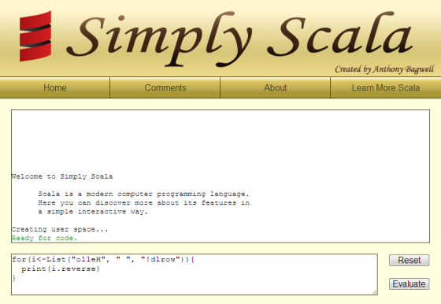
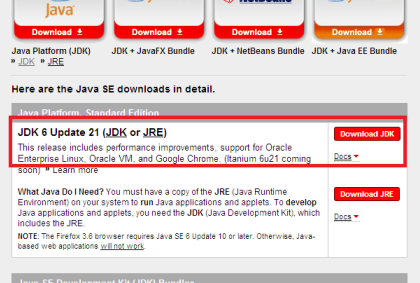
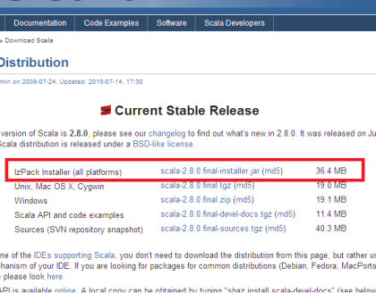
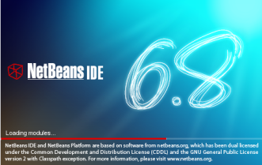
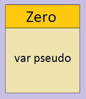
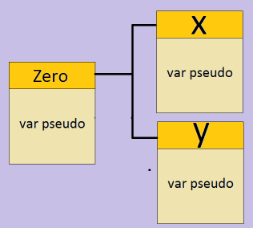
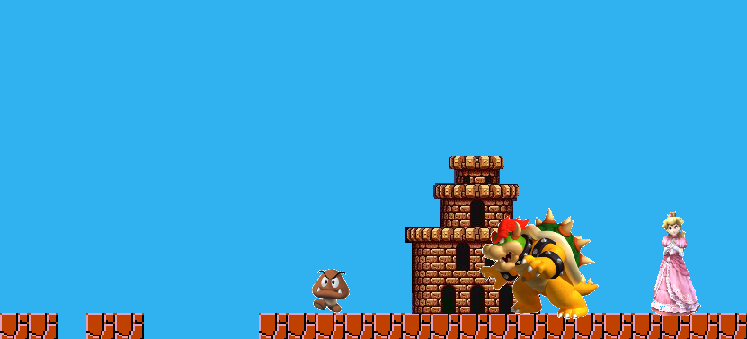
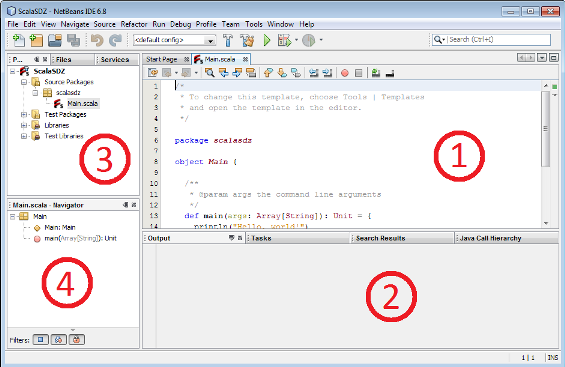

Vous voulez apprendre à programmer mais vous n'avez pas trouvé le langage adéquat ? Les pointeurs du C, la verbosité de Java et le typage de Python vous découragent ? :-° Vous voulez apprendre à faire des jeux simples, bien codés et facilement évolutifs ? Ou cherchez-vous tout simplement à changer un peu d'air et découvrir de nouveaux mondes dans la programmation ?
Si vous êtes dans une de ces situations, alors vous êtes au bon endroit. Bienvenue donc dans mon tutoriel de programmation. Je vais vous apprendre le langage Scala, un langage de programmation facile, élégant et puissant.
Attends ! Je ne sais pas ce qu'est un langage de programmation, moi !
Vous devez alors vous diriger rapidement vers le premier chapitre, tout y sera expliqué... à partir de zéro.
Bienvenue dans mon tutoriel sur la programmation. Mon nom est Aymen F., je suis étudiant, mon pseudo sur le Site du Zéro est Einstein++, et je me chargerai tout au long de ce tutoriel de vous apprendre la programmation avec le langage Scala. Même si vous n'avez jamais programmé dans votre vie, vous serez capables de suivre ce cours, car il commence vraiment de zéro.
Ce chapitre est d'ailleurs fait pour vous ! Je vais vous expliquer l'intérêt de la programmation et des langages de programmation. Nous installerons par la suite tout ce qu'il nous faut pour commencer à coder.
Ceci est un tutoriel sur la programmation, on va donc apprendre à concevoir des programmes.
C'est quoi un programme ? :euh:
Un programme ? C'est tout ce que vous utilisez sur votre ordinateur :
les navigateurs web (Google Chrome, Opera, Firefox, Internet Explorer) ;
les calculatrices ;
les éditeurs de texte (Bloc-notes, Microsoft Word, Vim, emacs...) ;
les jeux (WoW, Call of duty, Pokemon).
Pour créer un programme, on doit utiliser un langage de programmation. En effet, votre ordinateur parle une seule langue : le langage binaire. C'est une succession de 0 et de 1, par exemple 0100000101111001011011010110010101101110. o_O N'ayez pas peur, personne n'écrit des programmes directement en binaire de nos jours, et heureusement.
Mais si l'ordinateur ne comprend que cette langue, comment va-t-on lui parler autrement ?
C'est le rôle des langages de programmation ! Ils nous offrent la possibilité d'écrire des codes (des textes, en quelque sorte), qui sont facilement compréhensibles pour les humains (ceux qui comprennent l'anglais, du moins, car la quasi totalité des langages de programmation se rapprochent de l'anglais :-° ). Un programme se charge ensuite de transformer nos codes en binaire, pour que l'ordinateur puisse les comprendre. Ce programme diffère d'un langage à un autre.
Pour Scala, le langage que vous allez apprendre dans ce tutoriel, le programme traducteur s'appelle la machine virtuelle Java (JVM). La JVM ne traduit pas directement notre code en langage machine (binaire), elle passe par deux étapes. D'abord, elle traduit le code en un langage intermédiaire dit Bytecode Java. Ensuite, le Bytecode est transformé en code binaire (ce schéma est hyper simplifié, et pas forcément techniquement 100% correct).
To Scala or not to Scala
Il existe un grand nombre de langages, je dois donc vous expliquer pourquoi j'ai choisi de vous apprendre Scala.
Sa syntaxe et son utilisation sont simples, même les débutants peuvent l'apprendre facilement (oui oui, même vous).
On peut faire tout ce qu'on veut avec : des programmes de bureautique (éditeur de texte, tableur...), des programmes de maths ( :-° calculatrice, dessinateur de fonctions...) et surtout des jeux vidéo.
Il est portable, c'est-à-dire que quel que soit votre système d'exploitation (que vous soyez sous Windows, Linux, Mac OS ou autre), vous pouvez programmer en Scala.
Il utilise un « type de programmation » (on dit paradigme de programmation) appelé la programmation orientée objet (POO), qui est idéal pour programmer des jeux (vous apprenez la programmation pour faire des jeux, n'est-ce pas ?).
Allons-y, on a certaines choses à installer avant de commencer à écrire du code. ;)
Avant d'installer quoi que ce soit, je vais vous présenter un site où vous pouvez tester les codes du tutoriel sans rien télécharger. Ce site s'appelle Simply Scala et voici à quoi il ressemble :

Même si vous choisissez d'installer tout dès le début, je vous conseille vivement de l'utiliser à la place de la console lors des premiers chapitres.
Les plateformes
Java SE Development Kit (JDK)
Je vous ai déjà dit que Scala tourne sur la machine virtuelle Java. On va donc commencer par installer celle-ci. Allez sur le site de Sun Microsystems => Téléchargements => Java 2 Standard Edition puis installez la version du JDK la plus récente (et voici un lien direct pour les fainéants :p => lien pour télécharger la machine virtuelle Java).

Ensuite, choisissez votre système d'exploitation et cliquez sur Download. Une pop-up apparaît, cliquez sur « skip this step » et le téléchargement commencera. Il ne restera plus qu'à installer le JDK.
Scala
Cette fois-ci, il faut aller sur scala-lang.org => Software => Download Scala => Latest stable release => Current stable release et enfin choir le IzPack, le télécharger et l'installer. ;)

Pour tester l'interpréteur (ou console interactive), ouvrez une console (invite de commandes sous Windows) et tapez scala. Vous devez avoir un affichage semblable à celui-ci :
Welcome to Scala version 2.8.0.RC6 (Java HotSpot (IM) Client VM Java 1.6.0_20
Type in expressions to have them evaluated
Type :help for more information
L'interpréteur vous souhaite la bienvenue (« Welcome » :-° ) et vous affiche les versions de Scala et de la JVM, ainsi qu'un peu de blabla. Ensuite, il vous affiche scala> et attend que vous écriviez quelque chose.
Qu'est-ce qu'on doit y écrire ?
Rien pour le moment. On le fera dans le prochain chapitre. Ne laissez pas cette console vous effrayer, on va l'utiliser uniquement dans les premiers chapitres. On travaillera par la suite avec l'EDI Netbeans.
L'EDI Netbeans

Un EDI (ou environnement de développement intégré) est un programme qui va nous aider à coder plus facilement : coloration du code, indentation automatique, gestion de projet, compilation... L'EDI qu'on va utiliser s'appelle Netbeans.
Netbeans a été à la base un EDI uniquement pour Java, puis il a évolué pour supporter un grand nombre de langages, qui ne sont pas installés par défaut, mais qu'on doit ajouter nous-mêmes.
Vous devez d'abord télécharger et installer Netbeans. Je vous conseille de prendre la version en anglais car la version française est mi-française, mi-anglaise.
ouvrez Netbeans et allez dans Tools (outils) => Plugins => Downloaded (téléchargés) => add plugin (ajouter un plugin) ;
ajoutez tous les *.nbm que vous venez de télécharger ;
appuyez sur install (installer).
Vous avez maintenant une idée générale sur la programmation et sur le langage Scala. Vous avez sûrement appris de nouveaux mots tels que langage binaire et IDE.
Les choses sérieuses commenceront dans le chapitre suivant. Prenez donc votre courage à deux mains et... foncez ! :zorro:
Vous avez donc décidé d'apprendre la programmation avec ce tutoriel. Bonne idée, vous n'allez pas le regretter. :) On commencera en douceur en présentant les possibilités que vous offre le mode interactif de Scala, dont de l'utiliser comme calculatrice.
Nous continuerons en abordant deux concepts clés que la plupart des langages de programmation présentent et sans lesquels ils ne pourraient pas fonctionner (du moins pas correctement) : les variables et leurs types !
Pour finir en beauté (et pour pratiquer, ce qui est la clé de la bonne compréhension d'un langage), vous ferez une série d'exercices qui vous permettront de pratiquer tous les concepts que vous avez vus dans ce chapitre ! :D
Commencez par ouvrir le mode interactif de Scala comme je vous l'ai montré dans le chapitre précédent. Écrivez un calcul simple, par exemple 1 + 3 (si c'est trop difficile, vous pouvez écrire 1 + 1 :-° ) puis appuyez sur la touche <Entrée>, vous devez avoir ceci à l'écran :
scala> 1 + 3
res0: Int = 4
Déchiffrons le charabia qui s'affiche dans la console :
res0 : Scala s'amuse à donner des noms à vos calculs. res0 veut dire résultat n° 0. Si vous faites d'autres calculs, il va les renommer res1, res2, res3 et ainsi de suite.
Int : Int est l'abréviation d'Integer, mot anglais qui signifie entier. Les nombres 1, 5, -1 et -14 sont tous des entiers. Pourquoi Scala l'affiche-t-il ? Rassurez-vous, il ne va pas vous donner des cours de maths, il veut juste vous dire que le résultat de 1 + 3 est un entier.
4 : c'est tout simplement le résultat de l'expression 1 + 3.
Donc, en français, la ligne affichée est équivalente à « Votre calcul n° 0 a pour résultat un entier, qui est égal à 4 ».
Félicitations, amis Zéros, vous avez officiellement écrit votre première ligne de code ! ^^
Amusez-vous à faire d'autres tests :
scala> 2 + 5
res1: Int = 7
scala> 5
res2: Int = 5
Un peu de vocabulaire :
1 + 3 est une instruction ou expression.
4 est le résultat d'évaluation de l'expression 1 + 3.
Int est le type ou la classe de 4.
1, 3 et 4 sont des objets de type Int ou instances de classe Int.
+ est un opérateur ou une méthode, tous les objets de même type (ou classe) ont les mêmes opérateurs.
Il y aura forcément beaucoup de nouveaux mots et définitions au début, pensez à les écrire quelque part (sur un bloc-notes, dans votre portable) pour les trouver facilement en cas de besoin.
Il existe d'autres opérateurs sur les Int : -, *, / et %.
« - » : différence ;
« * » : produit ;
« / » : quotient de la division entière ;
« % » : reste de la division entière.
Testons ces opérateurs :
scala> 4 * 5
res3: Int = 20
scala> 8 / 3
res4: Int = 2
scala> 8 % 3
res5: Int = 2
Il est très doué en maths, ce Scala ! o_O En plus, il respecte la priorité des opérateurs mathématiques, c'est-à-dire qu'un calcul comme 2 + 5 * 3 retourne 17 (comme en maths) et non pas 21. Si on veut avoir 21, il faudra utiliser des parenthèses : (2 + 5) * 3.
scala> 2 + 5 * 3
res6: Int = 17
scala> (2 + 5) * 3
res7: Int = 21
Si on a des opérateurs de même priorité (« * » et « / », par exemple) l'expression est évaluée de gauche à droite :
scala> 10 / 2 * 5
res8: Int = 25
Un opérateur (méthode) peut être utilisé de 3 manières différentes :
scala> 5 + 3
scala> 5 +(3)
scala> 5 .+(3)
Les trois écritures sont totalement équivalentes, il y a des cas de figure où l'on préfère une d'entre elles aux autres mais on va discuter ce sujet une fois qu'on aura un peu avancé dans le cours.
Les nombres à virgule (ou décimaux)
Ce sont les nombres comme 5,3 et -8,7777 (sauf qu'on utilise le point à la place de la virgule). Leur utilisation est pareille à celle des entiers :
scala> 5.3
res0: Double = 5.3
Le Int d'avant a été remplacé par Double, qui désigne un nombre à virgule. Donc, en termes de programmeur, l'objet 5.3 est de classe (ou type) Double. On peut entre autres utiliser les opérateurs (méthodes) + (addition), - (soustraction), * (multiplication) et / (division) :
On peut même mélanger des entiers et des décimaux dans une même expression (instruction, opération), le résultat sera un décimal :
scala> 8.2 / 2
res3: Double = 4.1
Les caractères
Ils sont des lettres, chiffres ou symboles mis entre apostrophes :
scala> 'a'
res0: Char = a
scala> 'Z'
res1: Char = Z
'a' et 'Z' sont donc deux objets de classe (ou type) Char.
Tout caractère est équivalent à un nombre appelé code ASCII du caractère (prononcez code « Aski »). Par exemple, le code ASCII de 'A' est 65, celui de 'B' est 66, celui de 'C' est 67, etc. Pour connaître le code ASCII d'un caractère, il suffit d'utiliser l'opérateur (ou méthode) toInt :
scala> 'B' toInt
res2: Int = 66
Les chaines de caractères
Il s'agit de bouts de texte entourés par des guillemets :
scala> "Bienvenue sur le SDZ !"
res0: java.lang.String = "Bienvenue sur le SDZ !"
La classe (ou type) des chaines est java.lang.String, ce nom est trop long, donc on va dire seulement String. On peut « rassembler » des chaines en utilisant l'opérateur « + », on appelle ceci une concaténation.
Le type booléen est un peu spécial car il ne peut prendre que deux valeurs : VRAI et FAUX, qui sont représentées en Scala par true et false (simple traduction en anglais).
Comme vous pouvez le voir, la classe de true et false en Scala est Boolean. Les opérateurs (méthodes) sur les booléens sont NON, ET et OU :
ET : a ET b est VRAI si a et b valent VRAI. Il est FAUX dès que l'un des deux opérandes est FAUX.
OU : a OU b est VRAI si a est VRAI ou si b est VRAI (ou les deux à la fois). Il ne donne FAUX que lorsque les deux opérandes sont FAUX.
NON : NON a vaut VRAI si a vaut FAUX et vice versa.
Avec a et b chacun est soit VRAI soit FAUX. Les tableaux suivants traitent tous les cas possibles :
a
NON a
VRAI
FAUX
FAUX
VRAI
a
b
a ET b
VRAI
VRAI
VRAI
VRAI
FAUX
FAUX
FAUX
VRAI
FAUX
FAUX
FAUX
FAUX
a
b
a OU b
VRAI
VRAI
VRAI
VRAI
FAUX
VRAI
FAUX
VRAI
VRAI
FAUX
FAUX
FAUX
En Scala, NON est représenté par « ! », ET par « && » et OU par « || » (le caractère « || » n'est pas deux « L » minuscule collés : ce sont deux caractères pipe (prononcer « païpe »)), voici quelques exemples :
Il est particulièrement utile lorsqu'on fait des comparaisons entre les nombres, par exemple, la méthode « < » vérifie si le premier nombre est strictement inférieur au deuxième ou non :
La valeur de l'expression a < b est toujours soit true soit false. Remarquez qu'on peut comparer deux nombres de classes différentes (Int et Double). Voici la liste des opérateurs de comparaison :
Opérateur
Rôle
Exemple
Résultat
==
égalité
5 == -(-5)
VRAI
!=
non-égalité
5 != -(-5)
FAUX
<
inférieur strictement
2 < 2
FAUX
<=
inférieur ou égal
2 <= 2
VRAI
>
supérieur strictement
4 > 2
VRAI
>=
supérieur ou égal
8 >= 7
VRAI
Deux instances (objets) de la même classe (même ceux qui ne sont pas des nombres) peuvent être comparés avec les méthodes (ou opérateurs) « == » et « != ». Les instances de Char sont égales à leur code ASCII. Quelques tests :
Les objets de type Boolean sont utiles dès que l'on veut faire des conditions (ou structures conditionnelles). Une structure conditionnelle s'écrit (en français) de cette manière :
Si (CONDITION) EXPRESSION1 Sinon EXPRESSION2
J'explique : CONDITION est une instance de la classe Boolean, elle est soit VRAI soit FAUX.
Si CONDITION vaut VRAI alors c'est EXPRESSION1 qui est évaluée ;
Si CONDITION vaut FAUX alors c'est EXPRESSION2 qui est évaluée.
Vous allez mieux comprendre avec des exemples :
Si (VRAI) 2 Sinon 3
Si (0 > 1) "Bonjour" Sinon "Bonsoir"
Si (1 + 5 == 6) VRAI sinon FAUX
Quel est le résultat de chaque expression ?
Pour la première, on a CONDITION == VRAI donc la valeur de l'expression est 2. Pour la 2e, 0 > 5 vaut FAUX donc la valeur de l'expression est « Bonsoir ». Pour la 3e, 1 + 5 == 6 vaut VRAI donc toute l'expression vaut VRAI.
J'espère que c'est clair. Passons à la syntaxe des conditions en Scala :
if (CONDITION) EXPRESSION1 else EXPRESSION2
Il suffit de remplacer Si par if et Sinon par else (simple traduction en anglais). Voici les exemples précédents traduits :
scala> if (true) 2 else 3
res11: Int = 2
scala> if (0 > 1) "Bonjour" else "Bonsoir"
res12: java.lang.String = "Bonsoir"
scala> if (1 + 5 == 6) true else false
res13: Boolean = true
Lorsque l'on programme, on est souvent amené à utiliser des objets. Par exemple, si on doit calculer plusieurs fois la circonférence d'un cercle, on aura certainement besoin d'utiliser le nombre pi plus d'une fois.
Le fait qu'on doive taper la valeur de pi plusieurs fois dans la console est fastidieux et on prend le risque de faire une faute de frappe (2e utilisation) :
La solution est de sauvegarder la valeur de pi dans une variable.
C'est quoi une variable ?
C'est une boîte dans laquelle on peut mettre n'importe quel objet (1, true, 'c', "Shopping"). On crée une variable de la manière suivante (on dit aussi qu'on déclare la variable) :
var <Nom>: <Classe> = <ValeurInitiale>
var : c'est un mot-clé du langage. Un mot-clé sert à annoncer quelque chose d'important à Scala ou de lui dire de faire un certain traitement. Ici, var prévient Scala qu'on va créer une variable. D'ailleurs, on a déjà utilisé d'autres mots-clés : if et else qui annoncent au programme qu'on est en train d'utiliser une structure conditionnelle.
<Nom> : c'est le nom qu'on veut donner à notre variable (par exemple pi, x, rectangle).
<Classe> : c'est la classe de la variable (Int, Boolean, String...). On ne pourra mettre dans la variable que des objets de cette même classe.
<Valeur Initiale> : c'est n'importe quel objet ou autre variable dont la classe est <Classe>. On dit qu'on initialise la variable.
Créons notre variable qui va contenir la valeur (approchée) de pi :
scala> var pi: Double = 3.141592653
pi: Double = 3.141592653
On commence par le mot var suivi par le nom de la variable : pi. On a besoin d'une variable qui contiendra un nombre décimal (3.1415...), qui est une instance (un objet) de la classe Double, donc il faut que pi soit aussi de cette classe. Enfin, on initialise pi à 3.141592653. Scala réaffiche votre ligne (sans le var) pour vous dire que tout est bien passé.
Pour utiliser la variable, il suffit d'écrire son nom. Ce dernier sera remplacé par la valeur qu'on a mise dans notre boîte magique:
scala> pi
res2: Double = 3.141592653
On peut même faire des opérations avec (c'était notre but dès le début, calculer la circonférence d'un cercle) :
scala> 2 * pi * 3
res3: Double = 18.849555918
scala> 2 * pi * 5
res4: Double = 31.41592653
Vous avez compris ? :D
Nomenclature des variables
On ne peut pas nommer une variable n'importe comment, il y a bien des règles à suivre, le nom :
peut contenir des lettres, des chiffres et des symboles mais pas un caractère blanc (espace, retour chariot) ;
ne peut pas commencer par un chiffre ;
ne doit pas contenir des parenthèses, accolades, crochets, points, virgules, points-virgules, apostrophes ou guillemets ;
doit être différent des mots-clés du langage (vous pouvez consulter la liste complète en annexe).
Ainsi les noms 123, J'aime et Bi{ ne sont pas valides. Par contre, bonjour, Zéro et !!+*%? sont corrects. Les programmeurs Scala (oui oui, ça vous concerne ;) ) ont tendance à ne jamais nommer des variables qui commencent par une lettre majuscule. Pour les noms qui sont composés de plusieurs mots (par exemple « valeur de pi ») on préfère la camelCase (valeurDePi) et non pas la séparation_des_mots_par_des_underscores (valeur_de_pi).
Affectation
On a souvent besoin de changer les valeurs des variables déjà déclarées (créées). Par exemple, une variable qui sert à enregistrer la température doit changer régulièrement. Comment faire ? C'est simple, il suffit d'écrire le nom de la variable suivi du signe « = » et d'un objet ayant la même classe que cette variable, on dit qu'on affecte un nouvel objet à la variable. L'initialisation est une affectation au moment de la création.
scala> var x: Int = 0
x: Int = 0
scala> x = 5
x: Int = 5
scala> x
res5: Int = 5
On a parfois des variables dont on ne désire pas changer la valeur, par exemple pi, qui est une constante universelle. Vous allez me dire qu'il suffit de ne pas lui affecter une autre valeur ! C'est vrai, mais ce n'est pas aussi évident. Il suffit qu'on change sa valeur par erreur et puis, ka boom, le programme ne fonctionnera plus (j'ai ici écrit « = » à la place de « * », par erreur :-° ) :
scala> pi = 2 * 3.2
pi: Double = 6.4
Alors, que faire ?
On doit déclarer la variable comme constante (ou une valeur). C'est simple, il suffit de remplacer le mot-clé var par val :
scala> val pi: Double = 3.141592653
Désormais, dès que quelqu'un tente de changer pi (par erreur aussi :-° ), il y aura une belle erreur :
scala> val pi: Double = 3.141592653
pi: Double = 3.141592653
scala> pi = 2 * 3
<console>:6: error: reassignement to val
pi = 2 * 3
^
Il y a eu une erreur, « reassignement to val » veut dire « réaffectation à une val ». Le caractère « ^ » pointe vers l'endroit où l'erreur à été repérée, à savoir le signe égal de l'affectation. On peut cependant utiliser une variable constante (ou objet constant) dans des expressions :
scala> pi
pi: Double = 3.141592653
scala> 2 * pi * 3
res6: Double = 18.849555918
On a tendance en Scala à appeler les variables déclarées avec var des vars (ou variables mutables) et celles avec val des vals (ou variables non mutables).
res0, res1, res2...
Tous les resX affichés dans la console ne sont pas des noms simples, remarquez la ressemblance entre les deux résultats affichés dans ces deux cas :
scala> val p: Int = 2 * 4
p: Int = 8
scala> 2 * 4
res7: Int = 8
En effet, lorsque vous n'affectez votre expression (calcul, concaténation de chaines, structure if-else...) à aucune variable, Scala crée une variable non mutable (val) nommée resX (où X est un nombre) et l'initialise au résultat retourné par votre expression. On peut bien sûr utiliser ces resX comme toute autre val :
La meilleure façon d'apprendre un langage (surtout si c'est votre premier langage) est de le pratiquer le plus possible. Ceci est le but des exercices et des TP (travaux pratiques) que vous rencontrerez tout au long de ce tutoriel. Il ne faut pas aller directement à l'indication ou à la solution, cela ne vous aidera pas à avancer. Prenez tout votre temps, faites des essais, lisez l'indication, refaites d'autres essais et enfin lisez la solution. S'il y a quelque chose que vous n'avez pas bien assimilé (le cours, la correction des exercices ou même la raison pour laquelle votre solution ne marchait pas) vous pouvez toujours poser vos questions sur le forum (il faut lire les règles du forum avant de poster :pirate: ).
Exercice 1
Calculez avec l'interpréteur Scala les expressions suivantes :
8 + 3 ;
1 + 7 * 2 ;
(1 + 7) * 2 ;
(12 % 3) * (5 / 2).
Indications
o_O
Solution
scala> 8 + 3
res0: Int = 11
scala> 1 + 7 * 2
res1: Int = 15
scala> (1 + 7) * 2
res2: Int = 16
scala> (12 % 3) * (5 / 2)
res3: Int = 0
Exercice 2
Énoncé
Quelle est la classe (type) de 'a', 'b', et 'z' ? Affichez leur code ASCII.
Indications
Utilisez la méthode (opérateur) toInt.
Solution
Ce sont des caractères, leur classe est Char.
scala> 'a' toInt
res0: Int = 97
scala> 'b'.toInt
res1: Int = 98
scala> 'z' toInt
res2: Int = 122
Exercice 3
Énoncé
Essayez de comparer deux caractères (par exemple 'A' et 'B') avec « < » ou « > ». Que remarquez-vous ?
Indications
Revenez voir ce qu'il se passe lorsqu'on utilise « == » sur deux objets de classe Char.
Solution
On peut comparer deux chars, ce sont leurs codes ASCII qui sont comparés.
Exercice 4
Énoncé
Quel est le type (la classe) de 1.0 ?
Qu'est-ce qui se passe si on fait la somme d'un objet de cette classe et d'un autre de classe Int ?
Indications
Testez !
Solution
La classe est Double.
scala> 1.0 + 5
res0: Double = 6.0
Lorsque on mélange des entiers avec des décimaux dans une même expression (opération, calcul) le résultat est un Double.
Exercice 5
Énoncé
Quel est le nom complet de la classe String ?
Que veut dire le mot concaténer ?
Quelle est la classe de l'objet retourné par la concaténation d'un String avec un Int ou Double ?
Quel est le résultat de multiplication d'un objet String par un entier ? Peut-on multiplier un String par un Double ?
Indications
Regardez le cours pour les définitions et faites des tests pour les autres questions.
Solution
La classe des chaines est java.lang.String. Concaténer deux String veut dire les coller ensemble. La concaténation d'un String avec n'importe quel autre objet retourne un String.
scala> "123 " * 3
res0: String = "123 123 123 "
La multiplication d'un objet String par un Int retourne le String répété autant de fois que l'entier en question. On ne peut pas multiplier un String par un objet de classe Double.
Dans l'exemple 5 on compare le code ASCII de 'A' (65) avec 23. Dans l'exemple 6, 7 et 8 sont inversés dans la deuxième chaine.
Exercice 7
Énoncé
Avec quel mot-clé crée-t-on une variable ?
Créez une variable mutable m de classe Double initialisée à 5.32.
Créez une variable non mutable nm de classe Char initialisée à '@'.
Indications
Un petit coup d'œil sur la sous-partie des variables ne vous fera pas de mal. ;)
Solution
C'est une question piège ! Il y a deux mots-clés : val et var.
scala> var m: Double = 5.32
m: Double = 5.32
scala> val nm: Char = '@'
nm: Char = @
Exercice 8
Énoncé
Créez une variable n de classe Int initialisée à une valeur quelconque (de votre choix).
Écrivez une expression qui affiche « Bonjour, le monde. » sur une seule ligne si x est négatif et sur deux lignes (retour à la ligne après la virgule) si x est positif ou nul.
Indications
Pensez à un if-else pour la condition.
Le caractère ' ' produit un retour à la ligne (oui, il est considéré comme un seul caractère).
Solution
scala> val x: Int = 8
x: Int = 8
scala> if (x < 0) "Bonjour, le monde." else "Bonjour,\nle monde."
res0: java.lang.String =
"Bonjour,
le monde."
Exercice 9
Énoncé
Définir le mot affectation (dans son sens informatique).
Une initialisation est-elle une affectation ?
Indications
Fouillez le cours. :p
Solution
Une affectation est une association d'un objet à une variable.
Oui. L'initialisation est une affectation au moment de la création.
Ouah ! On en a appris des choses, maintenant ! Surtout, si vous n'avez pas compris quelque chose, n'hésitez pas à relire : mieux vous aurez compris ces concepts et mieux vous comprendrez les concepts que nous apprendrons dans les autres chapitres ! :)
Bonne continuation et rendez-vous dans le chapitre suivant ! ;)
On a manipulé quelques classes simples dans le premier chapitre : Int, Double, Char, String et Boolean. On a vu que chaque classe possède des méthodes que toutes ses instances peuvent utiliser (par exemple + pour les Int et Double, charAt pour les String, etc.). Dans ce chapitre, on va créer nos propres classes et leur ajouter des méthodes. Je vous préviens tout de suite, ce chapitre est l'un des plus importants dans la programmation en Scala, puisque tout ce qu'on va faire tout au long de ce tutoriel est de créer et utiliser des classes ! :o Je ne dis pas ça pour vous effrayer, rien n'est difficile et tout sera expliqué à partir de zéro, mais ne lisez pas ce chapitre si vous n'êtes pas en pleine forme. :p
Rappelons d'abord quelques notions que l'on a vues dans le second chapitre. On a vu que « bonjour » et « zéro » sont dits des objets de classe String ou des instances de String. On a deux types de variables, les vars (variables mutables) et les vals (variables constantes) :
scala> var x: Int = 0
x: Int = 0
scala> x = 5
x: Int = 5
scala> val y: Char = 'X'
y: Char = X
On a rencontré quelques méthodes :
scala> val x: java.lang.String = "Une Chaine !"
x: java.lang.String = "Une Chaine !"
scala> x charAt 0
res0: Char = U
scala> x.charAt(0)
res1: Char = U
Et on a découvert la structure conditionnelle if-else :
var a: Int = if (5 > 6) 8 else 9
a: Int = 9
Vous devez connaître toutes ces notions maintenant.
On va désormais créer nos propres classes, nos méthodes et nos objets.
On peut faire ça ? C'est difficile ? Et pourquoi doit-on le faire ?
Vous posez trop de questions :pirate: (mais c'est toujours comme ça au début :lol: ) ! Oui, on peut le faire, et il n'y a rien de difficile, il suffit de suivre attentivement. La troisième question est celle à laquelle il est le plus difficile de répondre, on va donc commencer par prendre un cas de figure. Supposons qu'on va cloner le célèbre jeu de plateforme Super Mario en console (vous apprenez la programmation pour pouvoir faire des jeux, non ? ;) ). Que faire ?... C'est difficile de savoir puisque vous n'avez pas encore trop de connaissances en programmation, mais supposons qu'il y a une classe Joueur qui ne représente pas des nombres ou des chaines, mais des Joueurs d'un jeu vidéo. Supposons aussi qu'elle dispose de plusieurs méthodes comme « sauter », « attaquer »... Enfin, supposons qu'on a une variable nommée mario de classe Joueur. Observez maintenant ce programme :
scala> mario sauter
res0: java.lang.String = "Je saute !!"
scala> mario sauter
res1: java.lang.String = "Je saute !!"
scala> mario battre ennemi
res2: java.lang.String = "J'ai battu l'ennemi !!"
scala> mario entrerDansLeChateau
res3: java.lang.String = "Je suis dans le chateau !! J'ai peur !!!"
scala> mario battre boss
res4: java.lang.String = "J'ai battu le boss !!"
scala> mario donnerBisou princesse
res5: java.lang.String = "Mwaaaaaaaaaaaaaah !!"
C'est super, notre jeu ! :D Dans ce jeu, on utilise la variable mario pour appeler quelques méthodes qui affichent à l'écran ce qu'il fait : il saute, resaute, tue un ennemi, entre dans le château, bat le boss et sauve la princesse Peach. On a oublié d'afficher « The End », mais ce n'est pas grave.
J'ai bien dit « supposons qu'il existe », mais malheureusement cette classe n'existe pas. :( Donc, s'il y avait une classe Joueur (et un objet mario de classe Joueur), on aurait pu créer un petit jeu de Mario. Imaginez qu'il y ait aussi des classes qui représentent votre maison, vos vêtements, votre ordinateur, vos parents, etc. On aurait pu mettre toute votre vie quotidienne dans l'ordinateur. o_O
Je ne suis pas en train de faire un mauvais rêve. Tout ce que je viens de vous dire peut être facilement réalisé avec la programmation ! :waw: Il suffit de savoir créer toutes ces classes (puisqu'elles n'existent pas encore), et c'est ce qu'on va apprendre dans quelques minutes. Maintenant, je peux répondre à votre question : on doit créer d'autres classes car on veut faire des choses plus compliquées qu'écrire du texte ou calculer 1 + 3. Même si vous n'avez pas trop saisi l'intérêt de tout ça, continuez la lecture. Vous allez mieux comprendre avec les exemples, les exercices et les travaux pratiques (TP).
Puisque nous sommes tous des Zéros, on va commencer par créer la classe « Zero » qui va représenter... les Zéros :p (comment ça, vous n'êtes pas des Zéros ? Sortez vite d'ici ou j'appelle la police les modérateurs :pirate: ). Vous vous souvenez du mot-clé var ? On a dit qu'il annonce à Scala qu'on va déclarer (créer) une variable. De même, le mot-clé class annonce qu'on va créer une classe.
Voici la syntaxe élémentaire pour créer une classe :
class <NomDeLaClasse>
Il suffit d'écrire le mot-clé class suivi d'un nom. C'est tout. Les règles de nommage pour les variables s'appliquent aussi pour les classes sauf qu'on préfère que la première lettre du nom d'une classe soit en majuscule. Vous avez hâte de tester ? Moi aussi. :p Allons-y, tapez class Zero et appuyez sur <Entrée>:
scala> class Zero
defined class Zero
« defined class Zero » veut dire « classe Zero définie » donc tout est bien passé. Notre classe est prête à être utilisée.
Comment faire pour l'utiliser ?
Si vous avez bien suivi jusqu'à maintenant, vous devez savoir qu'on ne manipule pas des classes, mais des objets. Il faut donc créer un objet de classe « Zero » (ou encore une instance de la classe Zero) : on dit qu'on instancie la classe. C'est (encore une fois) très simple : on va utiliser le mot-clé new qui signifie nouveau. Voici la syntaxe générale :
new <NomDUneClasse>
où NomDUneClasse désigne le nom d'une classe. Essayons cela :
scala> new Zero
res0: Zero = Zero@125c99f
On a donc notre variable res0, suivie de « : » et du nom de la classe, comme d'habitude. Après le signe égale, il y a le nom de la classe suivi du symbole '@' et par une succession de chiffres et de lettres (qui change à chaque fois, donc ne hurlez pas « je n'ai pas le même affichage ! », c'est tout à fait normal).
C'est quoi, ça ? On n'a pas eu des affichages pareils avant !
C'est parce que Scala peut afficher un Int, un String ou un Boolean, mais il ne peut pas afficher notre zéro, donc il décide d'afficher sa référence. C'est un peu compliqué d'expliquer ce qu'est une référence pour un débutant sans écrire 22 chapitres sur la mémoire et tout ça, donc je vais beaucoup simplifier les choses. :-° Votre ordinateur dispose d'un nombre gigantesque de boîtes dans lesquelles il enregistre les informations. Chacune de ces boîtes possède un nom unique (on n'aura jamais deux boîtes ayant le même nom). Lorsqu'on crée un objet, l'ordinateur se trouve obligé de l'enregistrer quelque part pour qu'on puisse l'utiliser plus tard. Il va donc chercher une boîte vide et il va y mettre notre objet. Le nom de la boîte choisie est enregistré dans l'objet, il est appelé référence de l'objet. Lorsqu'on réutilise cet objet (affichage, affectation) l'ordinateur lit la référence et va chercher la boîte qui a ce nom pour pouvoir récupérer les données.
Pas d'autres questions ?
Si ! Pourquoi on n'a pas utilisé new pour créer des instances de Int ?
Bonne question ! Ça me prouve qu'il y en a quelques-uns parmi vous qui suivent bien le cours. En fait, les classes vues dans le chapitre précédent sont un peu spéciales, des classes O.V.N.I V.I.P. o_O Imaginez qu'on doive créer les entiers avec new, et supposons que pour créer l'entier 1 il faille faire new Int(1), une opération simple comme 1 + 2 / 5 aurait été écrite comme :
scala> new Int(1) + new Int(2) / new Int(5)
:waw: Du coup, c'est devenu moche, long et illisible. Et n'oubliez pas que dans n'importe quel programme, on utilisera massivement les entiers, les booléens et compagnie. Pour ces raisons, les classes de base s'utilisent d'une manière plus facile que les autres.
Retournons à notre classe. On ne peut jusqu'à présent que créer des objets de type « Zero », les enregistrer dans des variables et afficher leurs références, rien de plus.
scala> val x: Zero = new Zero
x: Zero = Zero@2a5f99b
scala> x
res1: Zero = Zero@2a5f99b
J'avoue que c'est très limité. Un Zéro devrait avoir un nom, un âge et plein d'autres choses. On doit donc ajouter des variables à notre classe.
Comme le nom l'indique, ce sont des variables déclarées dans le corps d'une classe. Ah oui, j'ai oublié de vous dire qu'une classe peut avoir un corps (désolé :-° ). Il est mis entre deux accolades ('{' et '}') après le nom de la classe. Essayez ce code :
scala> class Zero
defined class Zero
C'est exactement équivalent au précédent code parce qu'on n'a rien mis entre les accolades, on dit que le corps de la classe est vide. Ce mot (vide) sous-entend qu'on peut y mettre quelque chose, et c'est vrai : le corps peut contenir des variables et des méthodes. On va commencer par les variables, on abordera les méthodes dans le chapitre suivant. Créons une variable mutable « pseudo » de classe String initialisée à « Anonyme » entre les accolades (c'est-à-dire dans le corps) de la classe Zero :
scala> class Zero { var pseudo: java.lang.String = "Anonyme" }
defined class Zero
Essayez maintenant d'utiliser « pseudo » :
scala> pseudo
<console>:6: error: not found : value pseudo
pseudo
^
On a une belle erreur : « non trouvée : valeur pseudo ». Scala ne trouve pas la variable.
Pourquoi ? Pourtant on l'a créée correctement avec var. :'(
Ne pleurez pas, la variable « pseudo » n'est pas perdue, mais lorsqu'on l'a mise dans le corps de la classe elle est devenu une propriété de celle-ci. Pour utiliser « pseudo », il faut d'abord créer une instance « z » de Zero et puis écrire « z.pseudo » (ou « z pseudo ») :
scala> val z: Zero = new Zero
z: Zero = Zero@299fd56
scala> z.pseudo
res0: java.lang.String = "Anonyme"
scala> z.pseudo = "Zozor"
scala> z.pseudo
res1: java.lang.String = "Zozor"
On a créé ici une variable « z » de classe « Zero », et on a pu accéder enfin à notre variable « pseudo » via « z.pseudo ». On a même pu lui affecter une nouvelle valeur !
Maintenant essayez de créer deux instances de « Zero » nommées « x » et « y » et d'affecter deux valeurs différentes à « pseudo » via « x.pseudo » et « y.pseudo ». Affichez ensuite « x.pseudo » et « y.pseudo ». Je mets le code en secret, essayez de le faire par vous-mêmes avant de voir la correction.
scala> val x: Zero = new Zero
x: Zero = Zero@299fd56
scala> val y: Zero = new Zero
x: Zero = Zero@56cg522
scala> x.pseudo = "Til0u"
scala> y.pseudo = "iPoulet"
scala> x.pseudo
res2: java.lang.String = "Til0u"
scala> y.pseudo
res3: java.lang.String = "iPoulet"
Si ! Dès qu'on change l'objet que contient la variable on ne peut plus récupérer l'ancien, sauf qu'ici la variable « pseudo » n'existe pas. :o o_O Rassurez-vous, je vais tout expliquer dans la prochaine sous-partie.
On va représenter la classe par un grand rectangle dans lequel on peut mettre des variables. Voici le schéma de notre classe Zero :

(Je sais, je sais ! Mon hamster et moi, nous avons le même niveau en graphisme. :lol: ) La classe sert de modèle pour la création d'objets. Je m'explique : dès qu'on crée une variable de type « Zero » avec new, Scala se dirige vers la définition (déclaration) de la dite classe, cherche les variables (et les méthodes) qui se trouvent dans le corps de la classe et associe une copie de chacun d'entre eux à la variable. Dans l'exemple précédent, lorsqu'on a créé la variable « x » de type Zéro, Scala est allé fouiller dans le corps de la classe. Lorsqu'il a rencontré la variable « pseudo », il l'a clonée et a associé le clone à « x » en la nommant « x.pseudo » (et il utilise la même approche avec « y »). Donc « x.pseudo » et « y.pseudo » sont en quelque sorte deux clones différents de « pseudo ».

Afin de vous convaincre qu'il ne s'agit pas de la même variable, on va faire le petit test suivant. Commençons par créer une classe vide A :
scala> class A
defined class A
Ensuite, créons une autre classe B qui contient une variable de type A :
class B { var a: A = new A }
defined class A
Maintenant nous allons créer deux instances b1 et b2 de B et afficher b1.a et b2.a :
scala> val b1 = new B
b1: B = B@1d07e4
scala> val b2 = new B
b1: B = B@58e891
scala> b1.a
res0: A = A@1def49
scala> b2.a
res1: A = A@188d9de
Vous n'avez rien remarqué ? :euh:
b1.a et b2.a n'ont pas la même référence, donc il ne s'agit pas de la même variable. Puisqu'elles sont enregistrées dans deux endroits différents de votre ordinateur, on peut changer l'une (par affectation) sans toucher à l'autre. C'est exactement ce qui s'est passé pour « pseudo » de la classe « Zero ». :)
On peut mettre n'importe quel nombre de variables membres dans une classe. Ajoutez donc une variable « age » de classe « Int » et une autre « signature » de classe String. Ensuite, créez une instance de « Zero » appelée « moi » et affectez votre pseudo, votre âge et votre citation aux variables correspondantes.
scala> class Zero {
| var pseudo: java.lang.String = "Anonyme"
| var age: Int = 0
| var citation: java.lang.String = "Aucune citation"
| }
defined class Zero
scala> val moi: Zero = new Zero
moi: Zero = Zero@125gf5
scala> moi.pseudo = "Einstein++"
scala> moi.age = 21
scala> moi.citation = "J'adore Scala <3"
Simple comme bonjour. Je n'ai pas fait d'affichage, mais vous êtes grands maintenant, faites-le vous-mêmes.
Pourquoi tu as mis des espaces avant les variables ?
On peut ajouter des espaces n'importe où, ils sont toujours ignorés, mais ils augmentent la lisibilité du code. On appelle ça l'indentation.
Une dernière chose avant la fin de cette sous-partie : pour utiliser la variable « pseudo » dans le corps de la classe (par exemple pour créer une variable qui contient « Pseudo: » + pseudo), on se sert d'un objet spécial nommé « this ».
scala> class Zero {
| var pseudo: java.lang.String = "Anonyme"
| var uneVariable: java.lang.String = "Pseudo: " + this.pseudo
| }
Lorsqu'on crée une variable « z » de classe « Zero », this est remplacé par « z », donc this.pseudo devient « z.pseudo ». ;)
POO
La programmation avec les classes et les objets est appelée programmation orientée objet (POO pour les intimes ;) ). Tout au long de la partie I du tutoriel, on va apprendre ce type (on dit aussi paradigme) de programmation. Il existe d'autres types, les deux plus célèbres sont :
le paradigme procédural (C, Pascal, etc.) : celui-là n'existe pas en Scala ;
le paradigme fonctionnel (Lisp et ses dérivés, OCaml, Haskell) : celui-là sera le sujet de la deuxième partie de ce tutoriel. :D
Nous allons nous concentrer dans cette sous-partie sur quelques points syntaxiques du langage.
Les blocs
Un bloc est un ensemble d'expressions mises entre accolades. Voici un exemple :
scala> {
| 3 + 6
| var varBloc: java.lang.String = "une var déclarée dans le bloc"
| 'A'
| }
res0: Char = A
Seule la dernière expression du bloc est affichée à l'écran. Pourquoi ? Parce qu'un bloc est une expression (tout comme 1 + 1, if-else...) et comme vous le savez déjà, toute expression renvoie quelque chose (on dit aussi que l'expression est évaluée à ce quelque chose), le bloc est évalué à sa dernière expression, donc à 'A' dans ce cas-là. Voici un autre exemple :
scala> {
| val i: Int = 2
| val j: Int = 4
| i + j
| }
res1: Int = 6
Si vous essayez d'utiliser i ou j après le bloc, vous aurez une erreur : not found : value <nom_de_la_variable> Les variables déclarées dans un bloc n'existent qu'à l'intérieur de celui-ci, on appelle ça la portée des variables. Prenons cet exemple :
scala> {
| val i: Int = 2
| val j: Int = {
| val k: Int = 4
| k * k
| }
| i + k
| }
Quelle est la valeur de j ? Que va retourner le bloc externe ?
La valeur de j est celle retournée par le bloc interne. Ce dernier, comme on l'a dit déjà, est évalué à sa dernière expression qui est k * k. Donc au final j vaut 16 (k == 4 et 4 * 4 == 16). Le bloc externe ne va pas pouvoir retourner quelque chose car il y aura une erreur. Scala ne va pas trouver la variable k : puisque k est déclarée dans le bloc interne, elle est automatiquement détruite à la fin de celui-ci, donc elle n'existe plus.
À quoi servent les blocs ?
À plusieurs choses. :p Par exemple, si on veut regrouper plusieurs expressions ensemble comme on a fait dans le dernier code.
Bon je vous l'accorde, ce n'est pas très utile, mais il a d'autres utilisations plus importantes comme dans le if-else. On a vu dans le chapitre précédent qu'une expression conditionnelle « if-else » doit avoir la forme :
if (CONDITION) EXPRESSION1 else EXPRESSION2
EXPRESSION1 et EXPRESSION2 doivent être chacune une et une seule expression. Heureusement, un bloc est considéré comme une seule expression, on peut donc mettre tout un bloc à la place de EXPRESSION1 et EXPRESSION2 :
scala> if (2 > 0) {
| val x: Int = 5
| x * x + 6
| } else {
| 2 + 5
| 32
| }
res5: Int = 31
Cool ! On peut désormais mettre autant d'instructions qu'on veut dans un if-else. Et encore, on peut mettre n'importe quel type d'expressions dans un bloc, même un if-else ou un autre bloc !
Bien. Passons à autre chose : l'inférence.
L'inférence
Scala peut inférer quelque chose dans vos programmes, c'est-à-dire que vous pouvez omettre des choses et il les ajoutera lui-même. On va voir dans cette sous-partie uniquement deux types d'inférence, les autres seront introduits au bon moment.
L'inférence des « ; »
Les plus curieux d'entre vous ont sûrement essayé d'écrire plusieurs expressions sur une même ligne. Mais, hélas, il se sont sûrement retrouvés avec une erreur (les pauvres :p ). Même si vous n'êtes pas si curieux que ça, essayez d'écrire scala> val x: Int = 0 val y: Double = 2.3. Le gentil interpréteur nous sort une petite insulte erreur bizarre : « ; expected but 'val' found » o_O (traduction pour les anglophobes : « ; attendu mais 'val' trouvé »).
Mais de quel « ; » parle-t-il ? C'est une blague ?
Si vous avez déjà programmé en C (Java, Pascal, etc.) alors vous devez savoir que chaque instruction finit par un « ; ». Pour ceux qui ne l'ont jamais fait, voici un code C (extrait du tutoriel officiel de ce site) :
int nombre = 2;
nombre += 4;
nombre -= 3;
nombre *= 5;
nombre /= 3;
nombre %= 3;
Remarquez que chaque instruction doit finir par un « ; ». C'est pareil ici, sauf que Scala les met pour nous : c'est l'inférence des points-virgules. :D Un « ; » est automatiquement ajouté à la fin de chaque ligne, sauf si cette dernière finit par un « , » ou un opérateur (+, *, ::, etc.), ou s'il y a une parenthèse non fermée. Dans l'exemple précédent, un seul « ; » a été ajouté à la fin de la ligne donc on doit ajouter un deuxième entre les deux instructions explicitement :
scala> val x: Int = 0 ; val y: Double = 2.3
Vous pouvez écrire tous les « ; » dans votre programme si vous voulez.
L'inférence des types des variables
Un autre type d'inférence, plus important que le premier, est l'inférence des types des variables (var et val) :
scala> val x = "Bonjour"
x: java.lang.String = "Bonjour"
scala> val z = new Zero
z: Zero = Zero@52ff5d
Du coup, on peut écrire moins de code pour avoir le même résultat. Notez que lorsqu'on ne met pas les types, Scala les ajoute avant de transformer le code en Bytecode Java. La seule différence entre les deux notations est le nombre de lettres écrites. :D
Et comment fait-il pour deviner le type tout seul ?
C'est simple : il regarde la valeur initiale de la variable (« Bonjour » et new Zero), détermine sa classe et associe cette classe à la variable.
C'est tout pour ce chapitre, vous pouvez aller faire les exercices. :-°
Tout comme le chapitre précédent, une série d'exercices vous attend. Bon travail. ;)
Exercice 1
Énoncé
Quel mot-clé doit-on utiliser pour déclarer une classe ?
Quel mot-clé doit-on utiliser pour instancier une classe ?
Indications
déclarer == créer instancier == créer une instance de
Solution
On utilise class pour la déclaration et new pour l'instanciation.
Exercice 2
Énoncé
J'ai voulu afficher un objet et la console m'a sorti PrisonBreak@256lk2d. Quelle est la classe de mon objet ?
Indications
Fouillez bien le cours.
Solution
L'objet est de type PrisonBreak (tout ce qui est avant le '@').
Exercice 3
Énoncé
Créez les classes vides Lit, Chaise et Bureau.
Créez une classe Chambre qui contient des instances des classes ci-dessus.
Créez une instance de Chambre. Qu'affiche la console ? Pourquoi ?
Indications
Créez un corps à votre classe Chambre.
Solution
scala> class Lit
defined class Lit
scala> class Chaise
defined class Chaise
scala> class Bureau
defined class Bureau
scala> class Chambre {
| var lit = new Lit
| val chaise = new Chaise
| val bureau = new Bureau
| }
defined class Chambre
scala> var maChambre: Chambre = new Chambre
maChambre: Chambre = Chambre@124lk21
La console affiche le nom de la classe suivi de '@' puis de la référence de l'objet maChambre parce qu'elle ne sait pas comment afficher les instances des classes qu'on crée.
Exercice 4
Énoncé
Dans l'exemple précédent, j'ai omis les noms des classes dans la déclaration des quatres variables parce que Scala peut les deviner tout seul. Comment appelle-t-on cette fonctionnalité ?
Indications
Je ne sais rien, moi. :-°
Solution
Oui, je me souviens maintenant ! C'est l'inférence des types.
Exercice 5
Énoncé
Lequel de ces caractères Scala insère-t-il à la fin de chaque ligne ?
un « : »
un « ; »
une « , »
Comment appelle-t-on cette fonctionnalité ?
Indications
La troisième proposition est fausse.
Solution
Scala ajoute un point-virgule à la fin de chaque ligne. Il s'agit de l'inférence des point-virgules.
Citation : Planète POO
Alerte ! Alerte ! Des intrus ! Les Zéros nous envahissent ! Tous les soldats sont invités à rejoindre le champ de bataille !
J'espère qu'il n'y avait pas beaucoup de morts de notre côté durant ce premier combat contre le monde de la POO. :euh: Ce n'était pas si difficile que ça, non ? Reprenez ce niveau chapitre dès le début si vous avez encore des doutes parce que, comme je l'ai dit au début, les classes sont la base de tout.
Ce n'est pas la fin de la bataille en tout cas, la POO sortira prochainement toutes ses armes secrètes : méthodes, héritage, polymorphisme... >_ Ne vous inquiétez pas, ensemble nous sommes imbattables. :soleil:
Je vous ai dit la dernière fois qu'une classe peut contenir des variables et des méthodes. Ces dernières vont rendre nos classes plus interactives. Elles vont aussi nous libérer de la répétition d'un même code plusieurs fois.
En somme c'est un concept assez fondamental et présent dans n'importe quel langage de programmation (elles sont appelées fonctions dans plusieurs langages ;) cependant cette dénomination n'est pas valide en Scala).
La dernière version qu'on a écrit de la classe « Zero » était celle-ci (en laissant Scala inférer les types) :
scala> class Zero {
| var pseudo = "Anonyme"
| var age = 0
| var citation = "Aucune citation"
| }
Notre zéro a un pseudo, un âge et une citation, parfait ! Le seul bémol est qu'on ne peut pas l'afficher car Scala affichera seulement son adresse. Que faire ?
Ça sonne bien, essayons cela :
scala> class Zero {
| var pseudo = "Anonyme"
| var age = 0
| var citation = "Aucune citation"
| var affichage = "Pseudo: " + pseudo +" Age: " + age + " Citation: " + citation
| }
On crée une variable « affichage » de classe java.lang.String initialisée à la concaténation de plusieurs chaines. Rien de difficile. Testons maintenant le code :
scala> val z = new Zero
z: Zero = Zero@214se58
scala> z.affichage
res0: java.lang.String = "Pseudo: Anonyme Age: 0 Citation: Aucune citation"
scala> z.age = 15
scala> z.affichage
res1: java.lang.String = "Pseudo: Anonyme Age: 0 Citation: Aucune citation"
Au début tout parait nickel, on a eu l'affichage qu'on cherchait. Mais, après le changement de la variable « age », « affichage » n'a pas été mis à jour. En fait, lorsque « age » est créée, elle vaut 0, donc à l'initialisation de « affichage » on a concaténé 0 avec la chaine. Après, lorsqu'on a changé la valeur de « age », rien n'a changé pour affichage car la valeur d'une variable ne peut changer que par affectation, chose qu'on n'a pas faite. Donc c'est impossible de gérer l'affichage avec une variable, on doit utiliser une méthode.
def : mot-clé qui annonce qu'on va déclarer une méthode.
<NomDeLaMethode> : un nom qui obéit aux mêmes règles de nommage que les variables.
<TypeDeRetour> : c'est la classe de EXPRESSION. On dit que la méthode retourne un <TypeDeRetour> (par exemple la méthode retourne un Int, un Boolean).
EXPRESSION : n'importe quelle expression.
C'est presque la déclaration d'une variable, seul le mot-clé change. On l'appelle aussi de la même manière qu'une variable, à savoir en utilisant un point suivi du nom de la méthode.
C'est donc une variable ?
Non, la différence entre une variable et une méthode est que EXPRESSION est réévaluée à chaque appel de la méthode. Changeons affichage en une méthode et observons :
scala> class Zero {
| var pseudo = "Anonyme"
| var age = 0
| var citation = "Aucune citation"
| def affichage = "Pseudo: " + pseudo +" Age: " + age + " Citation: " + citation
| }
defined class Zero
scala> val z = new Zero
z: Zero = Zero@214se58
scala> z.affichage
res0: java.lang.String = "Pseudo: Anonyme Age: 0 Citation: Aucune citation"
scala> z.age = 15
scala> z.affichage
res1: java.lang.String = "Pseudo: Anonyme Age: 15 Citation: Aucune citation"
Super ! Ça marche comme si c'était de la magie ! :magicien: Il n y a rien de magique : à chaque fois qu'on écrit « z.affichage » (donc à chaque fois qu'on appelle « affichage »), Scala réévalue EXPRESSION et affiche sa valeur. Donc à chaque appel, on refait la concaténation ("Pseudo: " + pseudo +" Age: " + age + " Citation: " + citation ) ce qui fait qu'on aura toujours les valeurs actuelles des variables et non pas des anciennes versions.
On a déjà vu des méthodes simples comme celle-ci : length de la classe String et toInt de la classe Char. Il suffit d'écrire objet.nomDeLaMethodeSimple pour invoquer (appeler) de telles méthodes.
Allez-y, ajoutez une autre méthode « avancerAge » qui ajoute 1 à la variable « age ».
def avancerAge = age = age + 1
Exemple d'utilisation :
scala> val z = new Zero
z: Zero = Zero@125fh8
scala> z.age
res2: Int = 0
scala> z.avancerAge
scala> z.age
res3: Int = 1
Quelques remarques :
L'expression « age = age + 1 » peut être simplifiée en « age +=1 ». En général, si o1 et o2 sont deux objets, l'expression o1 = o1 methode o2 peut étre écrite o1 methode= o2. Par exemple x *= 6, x /= 2, bool &&= true, etc.).
Lors de l'utilisation de la méthode, Scala n'affiche rien parce que la méthode ne retourne rien. En fait, vous ne vous êtes jamais demandé quel est le type de l'expression d'affectation age += 1 ? Elle a un type nommé Unit, ce type est l'un des types V.I.P. et signifie « rien ». On sait déjà que Boolean n'a que deux instances : true et false, mais Unit a une seule instance qui est « () ». Dès que l'interpréteur rencontre l'objet (), il n'affiche rien et continue son chemin. Comme tout objet, on peut mettre () dans une variable :
scala> val u = ()
u: Unit = ()
Donc si on veut déclarer explicitement le type de retour de avancerAge, la méthode devrait avoir cette forme :
def avancerAge : Unit = age += 1
Utilisation d'un fichier
Avec l'ajout des méthodes, la classe devient un peu volumineuse et il devient fastidieux de devoir tout réécrire dans la console à chaque fois. On va donc écrire le code dans un fichier. Ouvrez un éditeur de texte simple (Bloc-notes par exemple) et mettez-y le code de la classe Zero :
class Zero {
var pseudo = "Anonyme"
var age = 0
var citation = "Aucune citation"
def affichage = "Pseudo: " + pseudo + " Age: " + age + " Citation:" + citation
def avancerAge = age += 1
}
Enregistrez votre fichier sous le nom « Zero.scala » puis tapez dans l'interpréteur :
scala> :load <CheminDuFichier>\Zero.scala
Vous devez préciser l'emplacement du fichier (<CheminDuFichier>), voici un exemple :
scala> :load C:\Zero.scala
"Loading C:\Zero.scala"
class Zero defined
Scala vous prévient qu'il est en train de charger le fichier (Loading C:\Zero.scala) et ensuite, il annonce qu'une classe Zero a été créée.
Vous pouvez mettre n'importe quel nombre et n'importe quel type d'expression dans le fichier, elles seront interprétées dans l'ordre. Ajoutez ces expressions après la déclaration de la classe :
val z = new Zero
z.pseudo = "Un Zéro"
z.age = 12
z.citation = "Ce tuto est génial !!"
z.affichage
Enregistrez votre code et chargez votre fichier, vous devez voir ceci sur l'écran :
scala> :load C:\Zero.Scala
"Loading C:\Zero.scala"
class Zero defined
z: Zero = Zero@32az48
res4: java.lang.String = "Pseudo: Un Zéro Age: 12 Citation: Ce tuto est génial"
On pouvait faire ça et tu nous as obligés à taper toutes ces lignes dans la console moche toute noire ? :'( Pourquoi ?
Parce que je suis méchant. :diable: Plus sérieusement, vous aurez un jour ou l'autre besoin de travailler avec la console, surtout si vous voulez faire du web avec Scala (Lift, Play!) donc il vaut mieux se familiariser avec elle dès le début (cependant il n' y aura aucune notion de programmation web dans ce tutoriel).
Les commentaires
Lorsqu'on écrit du code qu'on veut passer à quelqu'un d'autre (par exemple pour le poster sur le forum) il sera judicieux de le commenter. Les commentaires sont des textes ignorés par Scala, donc vous pouvez écrire n'importe quoi (explication de la signification d'une expression, d'une classe, d'une méthode...). Il existe trois types de commentaires :
les commentaires qui tiennent sur une seule ligne : ils commencent par « // » et continuent sur toute la ligne ;
les commentaires qui tiennent sur plusieurs lignes : ils sont délimités par /* et */, ils peuvent être écrits sur plusieurs lignes ou une partie de la ligne ;
les commentaires de génération de la Scaladoc : ils sont un peu plus compliqués que les autres, une annexe leur sera donc consacrée.
Voici un exemple d'utilisation des deux premiers types de commentaires :
//Cette classe représentera les zéros
class Zero {
var pseudo = "Anonyme"
var age /*Attention, pas d'accent*/ = 0
}
/* Il y aura par la suite d'autre classes comme
Zozor, Mario et Pokemon ! */
Évitez les commentaires inutiles du genre :
/* C'est la version 1.1 de ce programme
Tous droits réservés !!!
Vous devez me donner 2000 euros avant d'utiliser
mon super programme qui écrit bonjour en console
LoOoOoOoOoOoOoOoOoOoOoOoOoOoOoOoOoOoOoOoOoOoOoOoOL*/
On a vu dans le chapitre 2 la méthode « charAt », qui retourne le caractère de la chaine qui se trouve à une position donnée.
scala> "Bonjour" charAt 0
res0: Char = B
scala> "Bonjour".charAt(0)
res1: Char = B
La deuxième notation ressemble un peu à celle qu'on a utilisée pour les méthodes simples (utilisation du point) sauf qu'il y a des parenthèses qui contiennent un Int.
C'est quoi cet Int ?
C'est un argument de la méthode. Souvent, les méthodes ont besoin d'informations supplémentaires pour assurer un fonctionnement correct. Par exemple, « charAt » a besoin de la position du caractère qu'elle va retourner et « + » a besoin d'un deuxième nombre pour pouvoir faire l'addition. La structure générale d'une méthode à un argument est :
Vous devez être capables de lire et comprendre ces notations tout seuls, vous n'êtes plus des nouveaux arrivants dans le monde de la programmation. ;) Comme exemple, on va ajouter à la classe « Zero » une méthode « ajouterAge » qui prend un Int en argument et l'ajoute à « age » :
def ajouterAge(n: Int) = age += n
Elle ressemble beaucoup à « avancerAge », sauf que celle-ci ajoute le nombre « n » passé en argument au lieu de 1. Faisons nos tests :
val z = new Zero
z.age
z.ajouterAge(5)
z.age
z.ajouterAge(12)
z.age
Rechargez le fichier Zero.scala et vous aurez :
z: Zero = Zero@124587
0
5
17
On crée tout d'abord une variable (constante) « z » de classe « Zero », on affiche la variable « z.age » (elle vaut 0), on lui ajoute 5, on la réaffiche (0 + 5 = 5), on lui rajoute 12 et on l'affiche pour la dernière fois (5 + 12 = 17).
Qu'est-ce qui s'est passé ? Lorsqu'on a fait « z.ajouterAge(5) » la méthode « ajouterAge » a été évaluée en remplaçant l'argument « n » par 5. Donc l'expression « age += n » a été remplacée elle aussi par « age += 5 ». :magicien: De même, lorsqu'on a appelé « z.ajouterAge(12) », « n » a pris la valeur 12 et donc on a réellement fait « age += 12 ». Donc « n » est juste là « pour la forme », il sera toujours remplacé par quelque chose de concret. Pour cette raison on l'appelle parfois « argument formel ». Pour m'assurer que vous avez bien compris, écrivez une méthode :
« multiplierAge » qui prend en argument un Int « n » et affecte à « age » sa valeur multipliée par « n » ;
« + » qui prend en argument un Int « n » et retourne la somme de « age » et « n » (sans modifier « age »).
def multiplierAge(n: Int) = age *= n
def +(n: Int) = age + n // ou age.+(n)
Tout comme pour les variables, on peut utiliser directement la méthode dans la classe où elle est définie (« this » sera ajouté implicitement). Voici la méthode avancerAge réécrite en utilisant ajouterAge :
Toutes les méthodes (à arguments ou non) peuvent être appelées de deux façons différentes :
o.methode
o methode
(Pour les méthodes sans argument, on préfère la première notation.) Pour les méthodes qui prennent un seul argument (on verra dans quelques instants les méthodes qui prennent plusieurs arguments ;) ) on a trois notations possibles :
o1.methode(o2)
o1 methode(o2)
o1 methode o2
La nouvelle notation est la troisième, elle est la seule à avoir un nom : la notation infixe. Elle est très importante parce que c'est grâce à elle qu'on peut écrire x + y au lieu de x.+(y). On la nomme parfois « la notation opérateur ».
Généralisation
En réalité, une méthode peut avoir n'importe quel nombre d'arguments, et pas seulement un. Les différents arguments sont séparés par des virgules :
D'abord, qui peut me rappeler pourquoi j'ai le droit de retourner à la ligne sans avoir de problèmes avec l'inférence des points-virgules ? Personne ? :'( Bon, je ne vais pas vous répondre, allez relire le paragraphe sur l'inférence tout seuls. :colere:
Retournons à nos méthodes à plusieurs arguments. On va créer une classe Calculatrice qui aura seulement une méthode somme2 qui prend deux Int et retourne leur somme et une méthode somme3 qui fait la même chose pour 3 entiers. Essayez de le faire sans voir la correction.
class Calculatrice {
def somme2(x: Int, y: Int) = x + y
def somme3(x: Int, y: Int, z: Int) = x + y + z
}
val c = new Calculatrice
c.somme2(5, 6)
val x: Int = 5
c.somme2(x, 2 * x)
c.somme3(1, 8, x)
Rien de compliqué, comme d'habitude. Je vais vous poser une autre question. Si on veut créer une méthode qui fait plusieurs instructions, que faire ? Je suis sûr que certains d'entre vous ont trouvé la réponse : les blocs. Encore une fois, les blocs nous montrent leur puissance et leur importance.
def methode = {
var x = 5
x += 2
x *= 8
x %= 3
x
}
Si vous appelez une méthode à plusieurs arguments de classes différentes, vous devez lui passer des objets des mêmes classes que les arguments et dans le même ordre. Par exemple, si on considère cette méthode :
def m(a: Double, b: Boolean, c: Chaise, d: Char) = //le corps ne nous intéresse pas
Pour appeler « m » correctement, il faut mettre entre parenthèses :
un objet Double (1.5, 3.1415...) suivi par,
un Boolean (true ou false) suivi par,
une instance de Chaise suivie par,
un Char.
Voici quelques exemples d'appels :
//Appels corrects
o.m(5.3, true, new Chaise, '5')
val c = new Chaise ; o.m(20.0, 22.32 < 0, c, '@')
//Appels incorrects
o.m(1.1, new Chaise, false, '8') //erreur : on a mis l'instance de Chaise avant celle de Boolean
o.m(0.23, true, new Chaise) //erreur : il faut passer quatre arguments et non pas trois
On a vu les principaux composants du corps de la classe : les variables et les méthodes. On les appelle champs de la classe.
Un des problèmes que vous allez rencontrer dans vos premiers programmes, lorsque vous déciderez de créer des classes, est de choisir entre ajouter une variable ou une méthode. Dans le début de ce chapitre, on a essayé de déclarer affichage comme une variable et lorsque ça n'a pas marché on l'a modifié en une méthode. Vous n'allez pas tâtonner toute votre vie, c'est très simple de différentier ce qui doit être une variable de ce qui doit être une méthode.
Comment faire alors ?
En suivant ces deux règles :
les propriétés sont représentées par des variables (nom, points de vie, ordinateur, longueur, poids...) ;
les actions sont représentées par des méthodes (sauter, manger, afficher, dormir...).
En plus, on préfère nommer les méthodes par des verbes et les variables par des noms pour pouvoir facilement distinguer une propriété d'une action (renommez donc « affichage » en « afficher » ;) ).
C'est tout pour ce chapitre. L'heure des exos a sonné. ^^
Avec quel mot-clé déclare-t-on une méthode ? Quelle est la différence entre ces deux lignes de code ?
var x = "5" * i // i est une variable de classe Int
def m = "5" * i
Indications
Relire les explications pour « affichage ».
Solution
On déclare une méthode avec le mot-clé def. La première ligne est une déclaration de variable. Même si la valeur de i change, x reste constant (si on n'effectue aucune affectation). Par contre, m est réévaluée à chaque appel.
Exercice 2
Énoncé
Quel type d'inférence a-t-on vu dans ce chapitre ?
Indications
On n'a pas parlé d'inférence ici. :-°
Solution
C'est l'inférence du type de retour des méthodes.
Exercice 3
Énoncé
def m(i: Int) = if(i > 0) x = i else x = -i
Comment appelle-t-on i ? Quel est le type de retour de m ?
Indications
i est un... formel. m retourne « () ».
Solution
i est un argument (formel) de la méthode. m est de type (de retour) Unit.
Exercice 4
Énoncé
def m() = "7" * 7
Quelle est l'appel erroné parmi ces possibilités ?
o m
o m()
o.m
o.m()
Indications
Le quatrième appel est correct.
Solution
Tous les appels sont corrects.
Exercice 5
Énoncé
On va ajouter la possibilité de recevoir et d'envoyer des messages aux Zéros.
Commencez par ajouter la variable « msg » de classe String qui va enregistrer le message.
Ajoutez une méthode envoyerMessage qui prend en paramètres un String et un Zéro et qui envoie le message au Zéro.
Ajoutez une méthode lireMessage qui affiche le message à l'écran.
Indications
Celui qui envoie le message est celui qui affecte le String au champ « msg » du « Zero » passé en argument.
Solution
class Zero {
//insérez ici le contenu de notre ancien corps
var msg = "Pas de Message"
def afficherMessage = println(msg)
def envoyerMessage(nouveauMsg: String, z: Zero) = z.msg = nouveauMessage
}
{
val mateo = new Zero
val cam = new Zero
mateo envoyerMessage("Bonjour !", cam)
cam.afficherMessage
}
J'ai mis les quatre instructions dans un bloc pour ne pas avoir l'affichage des références des deux instances. Le bloc est évalué à sa dernière ligne qui, elle, est de type Unit. Donc seul ce que va afficher println dans afficherMessage apparaîtra à l'écran, on aura donc un affichage plus propre.
Voici un autre chapitre terminé. :soleil: Vous êtes maintenant presque capables de faire des classes qui se respectent. Vous avez sûrement appris un grand nombre de nouvelles notions intéressantes telles que les méthodes, les arguments et, sûrement, l'écriture du code dans un fichier. ^^
Le problème des méthodes qu'on a faites est qu'elles sont un peu limitées. Les boucles, qu'on verra dans le chapitre suivant, permettront de faire des programmes très respectables. ;)
L'un de nos principaux buts dans la programmation est d'éviter la répétition du code. Si vous écrivez du code, une instruction ou un bloc plusieurs fois (ou que vous faites des copier / coller :-° ) alors vous devez savoir qu'il y a quelque chose qui cloche et devez essayer de réduire le code. On a déjà vu qu'on écrit une classe une seule fois, mais on peut créer n'importe quel nombre d'instances. C'est exactement la même chose pour les méthodes : on les déclare une seule fois (exemple : méthode diviseurs du chapitre précédent) et on les utilise autant qu'on veut (diviseurs(45), diviseurs(12), diviseurs(100)).
Les fonctionnalités qu'on va voir dans ce deuxième chapitre sur les méthodes rentrent dans ce but, notamment les valeurs par défaut et les boucles, qui vont nous épargner plusieurs lignes de code.
C'est une notion simple qui nous servira lors de la surcharge des méthodes.
Surcharge
On dit qu'une méthode m2 surcharge une autre méthode m1 si m1 et m2 ont le même nom avec des signatures différentes (en d'autres termes, si m1 et m2 ont le même nom et des listes d'arguments distinctes). Exemple :
def somme(x: Int, y: Int) = x + y // somme(Int, Int)
def somme(x: Double, y: Double) = x + y // somme(Double, Double)
Lors de l'appel de la méthode somme, Scala utilise les types des arguments passés pour savoir quelle méthode appeler :
On peut surcharger une méthode infiniment, il suffit que toutes les méthodes aient des signatures deux à deux différentes :
def somme(x: Int, y: Int) = x + y // somme(Int, Int)
def somme(x: Double, y: Double) = x + y // somme(Double, Double)
def somme(ch1: String, ch2: String) = ch1 + ch2 // somme(String, String)
def somme(x: Int, y: Int, z: Int) = x + y + z //somme(Int, Int, Int)
Cette fonctionnalité nous épargne le coup de donner des noms ridicules à nos méthodes, comme on a fait dans le chapitre précédent avec somme2 et somme3.
Lors de l'appel de la méthode ci-dessus, si on ne précise pas arg2 par exemple, il sera remplacé par v2.
Je ne suis pas sûr d'avoir compris ce que t'es en train de raconter. :euh:
Comme d'habitude, vous comprendrez mieux avec un exemple concret :
def concat(s1: String = "*", x: Int = 0, y: Int = 0, s2:String = "*") = s1 + x + ", " + y + s2
La méthode « concat » fait la concaténation de deux String et de deux Int. On peut l'appeler en utilisant cinq façons différentes :
obj.concat("[", 22, 14, "]") //retourne [22, 14]
obj.concat("(", 22, 14) //on n'a pas précisé s2 donc il sera remplacé par "*"
//la méthode renvoie (22, 14 *
obj.concat("@", 22) // y prend la valeur 0 et s2 prend "*" ce qui donne @22, 0*
obj.concat("@@") // retourne @@0, 0*
obj.concat //retourne *0, 0*
Donc la déclaration de la méthode est équivalente aux méthodes surchargées suivantes :
C'est long et fastidieux rien que pour six affichages, que faire alors s'ils étaient 50 ? 1000 ? 1000000000 ? :o On ne va pas s'amuser à réécrire tout ça en console. Même un copier / coller dans un fichier prendra énormément de temps.
Un autre problème qui ne peut être résolu qu'avec une boucle est l'écriture d'une méthode qui affiche tous les diviseurs d'un entier.
Écrire une méthode qui affiche les diviseurs de 6 est une chose simple :
La méthode println permet d'afficher un objet à l'écran (mais si on lui passe une instance de classe qu'on a créée, elle va afficher plein de symboles qui finissent, comme toujours, par la référence de l'objet). Son utilisation est simple : il suffit de lui passer l'objet à afficher :
scala> println(2)
2
scala> println('D')
D
En réalité l'objet existe, mais il est caché. C'est une longue histoire que je vais expliquer dans le chapitre qui suit le TP. O.K. ce code marche, mais si la méthode devait prendre un argument « n » de classe Int et afficher tous ses diviseurs, qu'allez-vous faire ? Rien ! On ne peut pas faire de telles méthodes sans les boucles. Il y a deux types de boucles :
les boucles impératives : while et do-while ;
les boucles fonctionnelles : for et for-yield.
Les boucles impératives
Ce sont les deux boucles while et do-while. On va apprendre à utiliser uniquement while parce que :
ce qu'on peut faire avec do-while est faisable avec while ;
l'utilisation de while et do-while n'est pas une bonne pratique en Scala (cependant on est parfois obligé de les utiliser), mais on va l'utiliser pour le moment puisque vous n'avez pas les connaissances nécessaires pour pouvoir vous en passer (la récursivité entre autres).
La boucle while
Cette boucle s'écrit en français :
Tant Que (CONDITION) EXPRESSION
Avec :
CONDITION : une condition booléenne, comme celle de l'if ;
EXPRESSION : une expression quelconque.
Comment ça marche ?
C'est simple :
(*) Si CONDITION == VRAI alors Scala évalue EXPRESSION et retourne à (*) (on dit qu'on retourne au début de la boucle, c'est-à-dire au Tant Que) ;
Si CONDITION == FAUX on sort de la boucle (c'est-à-dire que l'expression est terminée et complète le reste du programme).
Voici un exemple : supposons qu'on a une variable mutable x, de classe Int et initialisée à 3. Prenons cette boucle Tant Que :
Tant Que (x < 6) x += 1
Lorsque Scala atteint la boucle, il suit la démarche décrite plus haut, ce qui donne :
la condition x < 6 est VRAI (x == 3) donc on évalue l'expression x += 1 (x désormais vaut 4) et on retourne au début de la boucle ;
la condition x < 6 est encore VRAI (x == 4) donc on évalue une autre fois x += 1 (x contient 5 maintenant) et on retourne au début de la boucle ;
la condition x < 6 est encore VRAI (x == 5) donc on évalue encore une fois l'expression x += 1 (x vaut 6) et on retourne au début de la boucle ;
la condition x < 6 est FAUX (x vaut 6) donc on quitte la boucle.
C'est bien ? Passons maintenant à la syntaxe en Scala :
while (CONDITION) EXPRESSION
Je compte sur vous pour transformer l'exemple en une méthode (dans une classe, bien sûr). N'oubliez pas de définir x et de faire un test après la classe.
class Boucles {
def boucleWhile = {
var x = 3
while (x < 6) x += 1
}
}
val b = new Boucles
b.boucleWhile
Et la sortie console :
defined class Boucles
b: Boucles = Boucles@2387dr8
scala>
Du calme, les gars. >_ Je vous ai déjà dit que Scala n'affiche rien dans un seul cas. Lequel ? Lorsque l'expression ne retourne rien (elle retourne quelque chose en fait : (), la seule instance de Unit). La fonction retourne un bloc qui retourne à son tour sa dernière expression, qui est la boucle while. Or toutes les boucles qu'on va voir dans ce chapitre sont des expressions de classe Unit, elles ne retournent rien d'utile. On doit donc utiliser la méthode println pour l'affichage.
Mais on ne peut mettre qu'une seule expression dans une boucle !
:o Je ne vais pas répéter la même chose dans chaque chapitre ! On n'avancera jamais de cette manière ! Les blocs, les blocs, les blocs ! :colere: N'oubliez jamais ça !
O.K., continuons, voici le code :
def boucleWhile = {
var x = 3
while (x < 6) {
x += 1
println(x)
}
x
}
Et puisque je ne suis pas de bonne humeur, je vous laisse tester tout seuls.
Les boucles fonctionnelles
Les boucles fonctionnelles sont beaucoup plus importantes et beaucoup plus puissantes que les impératives. Il y a deux boucles fonctionnelles : for et for-yield. Comme je vous l'ai dit au début, la boucle for-yield sera introduite dans le chapitre sur les collections. Pourquoi ? Parce qu'elle retourne une collection :-° (ne soyez pas impatients :pirate: ). Aussi, la boucle for peut vous paraître un peu bizarre (même si vous avez déjà programmé en C ou en Java), vous n'avez pas des connaissances suffisantes pour que je puisse vous expliquer les mécanismes internes de la boucle for. :honte: On va juste apprendre à l'utiliser, tout le fonctionnement sera expliqué lorsque nous aborderons les méthodes d'ordre supérieur (joli nom, n'est-ce pas :zorro: ?).
La boucle for (Pour)
La syntaxe de la boucle Pour est :
Pour i de MIN à MAX Faire EXPRESSION
Avec :
MIN et MAX deux Int ;
i : variable spéciale appelée variable de boucle (vous pouvez lui donner n'importe quel nom valide) ;
EXPRESSION : n'importe quelle expression.
Voici comment elle fonctionne :
si MIN > MAX, on sort de la boucle directement (c'est-à-dire qu'on ne fait rien) ;
sinon, i prend la valeur MIN et on évalue EXPRESSION :
(*) i prend i + 1 (on dit qu'on incrémente i) ;
si i > MAX on sort de la boucle ;
sinon on évalue EXPRESSION et on retourne à (*).
On va faire des tests en console pour voir clairement ce qui se passe, voici la syntaxe d'une boucle for en Scala :
for (i <- MIN to MAX) EXPRESSION
Commençons par cet exemple simple :
class Boucles {
def boucleFor = for (i <- 1 to 6) println(i)
}
val b = new Boucles
b.boucleFor
b: Boucles = Boucles@145dg6
1
2
3
4
5
6
Je vous explique ce qui se passe. On a MIN < MAX (1 < 6) donc i prend l'objet 1, on évalue le println, ensuite i prend l'objet 2, on évalue le println ainsi de suite jusqu'à ce que i égale MAX (6). On incrémente i, elle devient supérieure à MAX donc on quitte la boucle. Sympa cette boucle. ^^
Écrivez une méthode qui prend en argument un Int « n » et qui affiche « Vive le SDZ » n fois. Appelez la méthode pour n = 3 et n = 20.
class Boucles {
def afficheSDZ(n : Int) = for (i <- 1 to n) println("Vive le SDZ")
}
val b = new Boucles
println("Premier Appel : ")
b.afficherSDZ(3)
println("Deuxième Appel : ")
b.afficherSDZ(20)
b: Boucles = Boucles@25k132
"Premier Appel"
"Vive le SDZ"
"Vive le SDZ"
"Vive le SDZ"
"Deuxième Appel"
"Vive le SDZ"
"Vive le SDZ"
"Vive le SDZ"
"Vive le SDZ"
"Vive le SDZ"
"Vive le SDZ"
"Vive le SDZ"
"Vive le SDZ"
"Vive le SDZ"
"Vive le SDZ"
"Vive le SDZ"
"Vive le SDZ"
"Vive le SDZ"
"Vive le SDZ"
"Vive le SDZ"
"Vive le SDZ"
"Vive le SDZ"
"Vive le SDZ"
"Vive le SDZ"
"Vive le SDZ"
Les conditions
Implémentons la méthode qui affiche les diviseurs d'un entier à l'aide d'une boucle for :
def diviseurs(n: Int) = for(i <- 1 to n) if(n % i == 0) println(i) else println("")
Le problème de ce code est le else inutile qu'on doit mettre (au passage, on peut écrire println tout court) et on aura aussi des retours à la ligne non nécessaires. Dans des cas pareils, lorsque seul l'if nous intéresse, on peut mettre la partie if dans la boucle :
def diviseurs(n: Int) = for (i <- 1 to n ; if (n % i == 0)) println(i)
L'expression if (n % i == 0) est appelée condition de boucle. On peut remplacer les parenthèses par des accolades et mettre le code sur plusieurs lignes :
def diviseurs(n: Int) = for{i <- 1 to n
if(n % i == 0)} println(i)
On peut mettre autant de conditions de boucle qu'on veut.
for imbriquées et générateurs
On dit qu'on a deux boucles for imbriquées si une boucle est à l'intérieur de l'autre (on parle aussi de while imbriquées, de if imbriquées) :
for (i <- 1 to 2)
for (j <- 1 to 2)
println(i + " " + j)
Ici, EXPRESSION est une autre boucle for qui affiche i et j. L'inférence des « ; » ne pose pas de problèmes, je vous ai dit que Scala ne met pas un « ; » s'il y a une expression non complète, qui est ici la boucle. Rien de compliqué :
1 1
1 2
2 1
2 2
i prend la valeur 1 et on évalue la boucle interne :
j prend la valeur 1 et on affiche 1 1.
j prend la valeur 2 et on affiche 1 2.
On sort de la boucle interne.
i prend la valeur 2 et on évalue la boucle interne :
j prend la valeur 1 et on affiche 2 1,
j prend la valeur 2 et on affiche 2 2,
on sort de la boucle interne,
on sort de la boucle externe.
Scala nous donne un raccourci pour ne pas avoir à écrire deux boucles :
for (i <- 1 to 2; j <- 1 to 2) println(i + " " + j)
On peut aussi faire autrement :
for {
i <- 1 to 2
j <- 1 to 2
} println(i + " " + j)
L'expression « i <- 1 to 2 » est appelée générateur. On peut mettre n'importe quel nombre de générateurs dans la boucle.
On va s'arrêter là pour ce chapitre, il commence à devenir trop long. :-°
def m(x: Int) = x * x // retourne un Int
def m(x: Int) = "123 " * x // retourne un String
Indications
Examinez l'appel de la méthode, par exemple m(2).
Solution
Ceci est impossible. Le type de retour ne fait pas partie de la signature. ;) En plus, si cela était possible, lors de l'appel à m(2), que va retourner la méthode ? 4 ou « 123 123 » ?
Exercice 2
Énoncé
Expliquez cette remarque à l'aide d'un exemple :
Indications
Prenez l'exemple de la méthode concat.
Solution
Supposons qu'on peut laisser Scala prendre les arguments par défaut de x et y mais pas de s2, on aurait pu faire :
concat("[",2,"]")
Que va remplacer « 2 » ici ? x ou y ? C'est ambigu donc c'est impossible de faire ceci en Scala (en fait, si, avec les paramètres nommés que je ne vais pas présenter dans ce tuto). Pour savoir comment vous pouvez appeler une méthode à arguments par défaut il suffit de suivre le schéma que j'ai fait pour « concat » (à savoir enlever un argument de la fin de la liste d'arguments à chaque fois).
Exercice 3
Énoncé
Combien de boucles a-t-on en Scala ?
Indications
Comptez !
Solution
Quatre : while, do-while, for et for-yield.
Exercice 4
Énoncé
Écrivez une méthode qui affiche les 10 premiers multiples d'un entier passé en argument (en commençant par 0).
Indications
Boucle for et println.
Solution
def f(n: Int) = for(i <- 0 to 10) println(i * n)
On a fini notre découverte des méthodes. Vous avez maintenant les connaissances nécessaires pour faire de petits programmes en console. Dans le prochain chapitre on va pratiquer un peu le langage avec un mini-projet où vous allez créer un petit jeu de Mario en console. ;)
Si vous êtes un habitant de cette planète, vous devez connaitre le personnage des jeux vidéo, Mario. Ce plombier italien est facilement reconnu avec sa salopette bleue, sa casquette rouge et ses moustaches bien particulières. Il a été créé par le Japonais Shigeru Miyamoto en 1981.
La première apparition de Mario fut dans le jeu Donkey Kong (sous le nom de Jumpman), mais son vrai succès a été achevé avec la série « Super Mario ». Depuis, il a été le héros dans plus de 200 jeux vidéo.
Mario vit dans le Royaume Champignon avec son frère Luigi, ses amis Toad et Yoshi et la princesse Peach. Son principal ennemi est le dragon Bowser qui essaye sans cesse de kidnapper la princesse, heureusement Mario est là pour sauver le jour.
On va dans ce TP créer un simple jeu de Mario en console. Voici l'image de notre mini-stage :

Pour gagner, Mario doit :
sauter ;
resauter ;
battre un ennemi ;
entrer dans le château ;
vaincre Bowser ;
sauver Peach.
C'est exactement le jeu que je vous ai montré dans le début du chapitre 3. :D
C'est ce que vous êtes capable de faire ( :-° ) et il y aura du boulot quand même. Râlez comme vous voulez, mais vous ne trouverez jamais un tutoriel pour débutants qui commence (ou finit) avec un MMORPG en 3D.
Le TP se divise en deux parties :
d'abord on va créer des classes générales qui vont représenter tout personnage d'un jeu Mario-like ;
on va ensuite créer notre jeu : Mario et le jour de malchance.
Classes nécessaires
On va créer quatre classes : Personnage, Ennemi, Boss et Princesse.
Pourquoi ne pas les nommer Mario, Peach, etc. ?
Je vous ai dit une fois que lorsqu'on programme on ne veut pas répéter le code, on préfère écrire un code une fois et qu'il soit utilisable pour plusieurs cas différents. Pour rester dans cet esprit, on va créer des classes générales qui serviront non seulement pour notre Mario, mais pour tout jeu qui lui ressemble. On va d'ailleurs créer quelques champs (méthodes et variables membres) qu'on ne va pas utiliser. Ils seront là pour un éventuel autre jeu.
Voici ce que doit faire chacun des personnages secondaires :
les objets de classe Ennemi doivent être capables de battre seulement le personnage principal (qui est une instance de PersonnagePrincipal) ;
par contre, les objets de classe Boss doivent être capables de battre le personnage principal et les autres ennemis et boss ;
les princesses, quant à elles, doivent savoir donner un bisou et donner une gifle. Ça suffira amplement. :p
Le personnage principal est plus intéressant à créer puisqu'il est capable de faire plusieurs choses :
il a un nombre de vies et une quantité d'argent (les deux sont des valeurs entières) ;
il peut gagner et perdre de l'argent ;
il peut seulement perdre des vies (pas de mots de passe :pirate: ) ;
il peut battre les ennemis et les boss ;
il peut donner des bisous aux princesses ;
il peut entrer dans un château ;
il peut mourir.
Il s'agit de classes et de méthodes simples, vous ne devez pas avoir de problèmes de ce côté-là (je vais quand même vous guider un peu :ange: ).
L'histoire du jeu
Voici l'histoire du jeu, racontée par Toad :
« C'était un beau jour de printemps, tout le monde dans la Ville Champignon était en train de faire son travail avec euphorie et fierté. Tout d'un coup, tout devint noir, comme s'il y avait une éclipse. J'ai levé la tête vers le ciel et... surprise ! Ce n'était pas une éclipse, mais un géant château volant, bien évidemment celui de Bowser ! Tout le monde criait, courait dans tous les sens en hurlant « Mariooooo ! Marioooo ! ». Mais hélas, Mario a quitté la ville depuis un moment et est allé à Hollywood pour travailler comme garde du corps de Hannah Montana. :'( Je me suis caché dans une cave avec trois autres citoyens. Quelques heures après, je suis sorti voir ce qui se passait : c'était le chaos total ! Tout est détruit : les maisons, les arbres, les champs... J'ai couru vers le château de Peach, mais, malheureusement elle n'était pas là : Bowser l'a kidnappée. :waw:
À l'autre bout du monde, Mario était en train de se préparer pour le grand concert de Hannah. Il regardait son beau visage dans un petit miroir qu'il avait dans sa main, tout en chantant une des chansons de Hannah :
You get the best of both worlds Chill it out, take it slow Then you rock out the show
You get the best of both worlds Mix it all together and you know that it's the best of both worlds
Quelques minutes avant le début du concert, Mario a reçu un SMS sur son iPhone 3G, qui contenait quatre mots : « Bowser a pris Peach ! ». Sous le choc, Mario a jeté le miroir par terre et couru vers l'aéroport pour retourner à la Ville Champignon. Le pauvre ne savait pas ce qui l'attendait, puisque briser un miroir entraîne sept ans de malchance ! >_ »
Déroulement du jeu
Le reste de l'histoire, c'est le destin qui va l'écrire. Dans le jeu du chapitre 3, tout était parfait, Mario faisait ce qu'il devait faire et sauvait sa princesse. Ceci se passe de cette façon si Mario est dans des conditions normales, mais pas avec une malchance qui le suit ! Désormais Mario a :
une chance sur cinq de tomber lors du premier saut ;
une chance sur trois de tomber dans le deuxième trou :
une chance sur quatre d'être tué par le premier Goomba ;
trois chances sur dix de pouvoir entrer dans le château sans qu'il ne soit repéré par les gardiens ;
une chance sur deux de battre Bowser (ça va être dur pour notre petit Mario) ;
une chance sur trois qu'il soit giflé par Peach (elle est jalouse de Hannah :p ).
Mario commence avec 10 vies. À chaque fois qu'il tombe, qu'il est attaqué ou qu'il est giflé, il perd une vie. Il a deux essais pour entrer dans le château, si aucune de ses deux tentatives n'est fructueuse il perd une vie. À chaque fois, Mario reprend le jeu depuis le début.
C'est simple ( :-° ), vous devez créer une classe nommée « JourDeMalchance » qui contient des variables représentant tous les personnages du jeu et une méthode « commencerUnJeu » qui s'occupera de tout le jeu. Vous pouvez ajouter d'autres méthodes intermédiaires si vous voulez.
Je ne vais pas vous laisser seuls, il y aura sûrement quelques indications utiles (eh oui, je suis gentil parfois :D ).
Indications
Les classes
Dans les quatre classes citées plus haut, vous devez mettre un champ « nom ».
Chaque méthode affiche du texte avec println et utilise les noms des différents personnages, par exemple :
def donnerBisou(p: Princesse) = println(nom + " a donné un bisou à " + p.nom)
Les méthodes battre(p: Personnage) des classes Ennemi et Boss ainsi que la méthode donnerGifle(p: Personnage) de la classe Princesse doivent retrancher 1 aux points de vie (PV) du Personnage passé en argument.
La méthode mourir prend en argument une chaine et l'affiche à l'écran (utilisez cette méthode lorsque Mario tombe ou lorsqu'il est attrapé par les gardiens du château).
La chance
La gestion de la chance est un point important du jeu. On va utiliser une petite astuce : par exemple, pour le cas du premier saut, on a une chance sur cinq de tomber. L'astuce est de générer un nombre aléatoire entre 0 et 4 (on a donc 5 cas : 0, 1, 2, 3 et 4). Si le nombre tiré est 0 alors Mario n'a pas de chance et il tombe, sinon il saute avec succès.
Voici un autre exemple : pour une chance de 3 sur 10 on va générer un nombre aléatoire entre 0 et 9 (donc 10 possibilités). Si le nombre tiré est parmi 0, 1 et 2 (3 chances parmi les 10 possibles) on considère que Mario n'a pas été chanceux. Pour générer le nombre aléatoire on va utiliser la classe scala.util.Random. On doit instancier la classe avec new et appeler la méthode nextInt sur l'objet créé. La méthode nextInt prend en argument un entier « n » et génère un nombre (pseudo) aléatoire entre 0 et (n - 1).
val rand = new scala.util.Random
rand.nextInt(10) // renvoie un Int entre 0 et 9 == (10 - 1)
Pour ne pas encombrer votre code, faites une méthode qui donne si on a une chance de n sur m ou pas (la méthode renvoie true si on a de la chance et false sinon). Si vous n'arrivez pas à faire cette méthode par vous-mêmes, vous pouvez la trouver ici (essayez d'abord de la faire tout seuls, le copier / coller ne sert à rien) :
def chance(n: Int, m: Int) = {
if (rand.nextInt(m) >= n ) true else false
}
Dans l'exemple des 3 chances parmi 10, observez que si le nombre tiré est strictement inférieur à 3 (0, 1 ou 2) alors on n'a pas la chance. C'est exactement cette idée que j'ai utilisée pour écrire la méthode chance : si le nombre tiré est supérieur ou égal à n, alors on renvoie true, sinon on renvoie false. Notez que la condition if-else est superflue, si la condition est VRAI on retourne VRAI et sinon on retourne FAUX. Le plus logique est de retourner directement la condition :
Cette méthode contrôle tout le jeu. D'abord, elle donne les noms exacts aux variables qui représentent les joueurs (mario, peach, goomba et bowser). Ensuite le jeu commence : le déroulement du jeu se répète lui-même donc pensez à utiliser une boucle. Créez dans la classe jeux une variable booléenne gameOver initialisée à false et changez-la en true dès que Mario arrive à donner un bisou à Peach ou que ses PV atteignent zéro. Pour le déroulement du jeu, pensez à des if-else imbriqués.
Affichage
Pensez à séparer les différents essais par des retours à la ligne ou autre. La méthode « * » de la classe String vue dans le chapitre 2 peut vous aider. Pour que l'affichage de tout le jeu ne soit pas instantané, vous pouvez faire des pauses entre les instructions. Il suffit d'utiliser la méthode Thread.sleep :
Thread.sleep(1000) // fait une pause d'une seconde
L'argument de sleep est le temps en millisecondes (1000 millisecondes = 1 seconde).
Où est le new ici ? :o
Il n'y en a pas, je vous expliquerai pourquoi dans le chapitre suivant (et je vous expliquerai aussi pourquoi println est appelée sans objet ;) ).
J'espère que vous avez réussi votre premier TP. Ne courrez pas à la correction lors du premier problème rencontré. Essayez tout ce qui vous passe par la tête, relisez l'énoncé et les indications et postez sur le forum (dans ce cas, même si vous n'arrivez pas encore à faire le TP, essayez de bien comprendre la correction et refaites l'exercice quelques jours plus tard ;) ).
Voici une solution possible (il n y a jamais une seule solution) :
class Personnage {
var pv = 10
var argent = 100
var nom = "Héro"
def sauter = println(nom + " a sauté !!!")
def donnerBisou(p: Princesse) = println(nom + " a donné un bisou à " + p.nom)
def battre(e: Ennemi) = println(nom + " a battu " + e.nom)
def battre(b: Boss) = println("Wahouuuu !! " + nom + " a battu " + b.nom)
def entrerChateau = println(nom + " est entré dans le château !")
def mourir(s: String) = {
println(s)
pv -= 1
}
}
class Ennemi {
var nom = "Ennemi"
def battre(p: Personnage) = {
println(p.nom + " a perdu devant " + nom + " !")
p.pv -= 1
}
}
class Boss {
var nom = "Boss"
def battre(p: Personnage) = {
println(p.nom + " a perdu devant " + nom + " !")
p.pv -= 1
}
def battre(e: Ennemi) = println(e.nom + " a perdu devant " + nom + " !")
def battre(b: Boss) = println(b.nom + " a perdu devant " + nom + " !")
}
class Princesse {
var nom = "Princesse"
def donnerBisou(p: Personnage) = println("mwaaaaaaaaah !")
def donnerGifle(p: Personnage) = {
println("Va-t-en !!")
p.pv -= 1
}
}
class Jeu {
val mario = new Personnage
val goomba = new Ennemi
val bowser = new Boss
val peach = new Princesse
val rand = new scala.util.Random
def chance(n: Int, m: Int) = {
rand.nextInt(m) >= n
}
var gameOver = false
def maledictionDeMario = {
mario.nom = "Mario"
goomba.nom = "Goomba"
bowser.nom = "Bowser"
peach.nom = "Peach"
for(i <- 1 to 10; if (!gameOver)){
println("*" * 50)
if (chance(1, 5)) {
mario.sauter
if(chance(1, 3)) {
mario.sauter
if(chance(1, 4)) {
mario.battre(goomba)
if(chance(3, 10) || chance(3, 10)) { /* on a deux essais pour le château, il faut
que le premier OU le deuxième soit VRAI */
mario.entrerChateau
if(chance(1, 2)){
mario.battre(bowser)
if (chance(1, 3)) {
mario.donnerBisou(peach)
gameOver = true // si Mario arrive à baiser Peach alors le jeu se termine
} else peach.donnerGifle(mario)
}else bowser.battre(mario)
}else println(mario.nom + " a été attrapé !")
}else goomba.battre(mario)
}else println(mario.nom + " est tombé dans le 2e trou !")
}else println(mario.nom + " est tombé dans le premier trou !")
if(mario.pv == 0) gameOver = true // si les vies de Mario sont toutes perdues on perd le jeu
Thread.sleep(3000) // temps d'attente 3 secondes
}
println("*" * 50)
println("*" * 50)
println("Game Over")
}
}
Avant de vous laisser je vais vous donner quelques idées d'améliorations :
faites un mode deux joueurs Mario/Luigi. Dès que l'un des deux est mort on passe au suivant jusqu'à ce que les deux gagnent, que les deux perdent ou que l'un gagne et l'autre perde ;
faites un mode défi à deux joueurs : Mario et Luigi répètent le jeu indéfiniment jusqu'à ce que l'un des deux gagne le jeu ;
trouvez d'autres idées d'améliorations.
C'est tout pour ce TP, on reviendra à la POO dans le prochain chapitre : « Constructeurs et Encapsulation ».
Après la pause que nous avons pris durant le TP, nous allons maintenant retourner à la programmation orientée objets, et apprendre une nouvelle notion : les singletons. Nous allons également nous débarrasser complètement de la console noire, et utiliser l'EDI Netbeans (il est temps de l'installer et de le configurer si ce n'est pas déjà fait).
La dernière fois que vous avez vu la classe Zéro, elle avait cette allure :
class Zero {
var pseudo = "Anonyme"
var age = 0
var citation = "Aucune citation"
def afficher = println("Nom: " + nom + " Age: " + age + " Citation:" + citation)
def avancerAge = age += 1
var msg = "Aucun Message"
def afficherMessage = println(msg)
def envoyerMessage(nouveauMsg: String, z: Zero) = {z.msg = nouveauMessage}
}
Nous allons maintenant créer une classe Zozor pour représenter l'âne le plus intelligent au monde (c'est la mascotte de ce site, pour ceux qui ne le connaissent pas). Il sera capable d'afficher un message à l'écran et d'envoyer un message à un Zéro :
Rien de bien compliqué. Il s'agit d'une classe simple possédant deux méthodes, simples aussi. Le code vous parait correct ? Rien de bizarre ?
Oui c'est correct puisque lorsque je charge le fichier j'ai "defined class Zozor" Qu'est ce qui cloche donc ?
Oui le code est syntaxiquement correct mais faux dans sa logique. o_O Observez cette utilisation de Zozor :
val zozor1 = new Zozor
val zozor2 = new Zozor
Alors, vous n'avez encore rien remarqué ?
Enfin ! ^^ Notre code ne génère pas d'erreurs mais il n'a aucun sens. Il n'existe qu'un et un seul Zozor sur terre, donc pouvoir créer plusieurs instances de la classe est absurde.
La solution consiste à remplacer la classe par un singleton. Un singleton est une classe qui n'a qu'une et une seule instance ayant le même nom que cette classe. La déclaration d'un singleton est semblable à celle d'une classe, on doit seulement remplacer le mot-clé class par object (qui signifie objet) :
Ce qui s'est passé ici c'est qu'on a créé une classe qui n'a pas de nom (on dit que c'est une classe anonyme) et on l'a instancié en même temps. L'instance créée s'appelle Zozor et puisque la classe ne possède aucun nom, on ne peut plus créer d'autres instances. :magicien:
Puisqu'un singleton est un objet, on peut appeler ses champs directement. Voici un exemple :
Zozor.afficher("Bonjour les Zéros !!") !
val z: Zero = new Zero
Zozor.envoyerMessage(z, "Joyeux Anniversaire !")
z.afficherMessage
et la sortie console :
"Bonjour les Zéros !!"
defined module Zero
z: Zero = Zero@25fd26
"Joyeux Anniversaire !"
Tout est parfait. Zozor a affiché un message et il a ensuite souhaité un joyeux anniversaire au Zéro "z". Le "defined module" est l'équivalent du "defined class" pour les classes. Choisir entre créer une classe ou un singleton n'est pas toujours évident, on doit parfois penser à ce qu'on va faire avec l'objet. Par exemple, pour une calculatrice deux cas de figure se présentent :
Si elle va juste servir pour des gros calculs dans un jeu alors un singleton fera l'affaire ;
Si on va créer un programme qui simule la vente des calculatrices, une classe sera obligatoire pour pouvoir en créer plusieurs instances.
On va enfin pouvoir dire adieu à la console et commencer à utiliser Netbeans. Pour créer un projet Scala, suivez ces étapes :
Ouvrez votre IDE
Dans le menu File -> New Project -> Scala -> Next
Dans le champs de texte Project Name écrivez ScalaSDZ
Choisissez un dossier pour Project Location (votre projet sera enregistré dans ce dossier).
Laissez le reste tel qu'il est et appuyez sur Finish.
Vous devez vous trouvez avec ceci :

Je vous explique ce que sont les quatre zones :
zone (1) : c'est là où vous allez écrire votre code. Netbeans vous fournit déjà quelques lignes par défaut.
zone (2) : c'est la sortie, Netbeans y affichera tout ce qu'il veut vous dire. Cette zone comporte aussi la console.
zone (3) : vous trouverez ici l'arborescence de tout vos projets Netbeans.
zone (4) : Netbeans vous affiche ici l'arborescence des classes, variables et méthodes qui sont définis dans le fichier ouvert en (1) (Main.scala dans le screenshot). Cette zone est importante lors de la navigation dans de longs codes.
Code minimal
Le code affiché en (1) doit ressembler à ceci (en supprimant les commentaires):
package scalasdz
object Main {
def main(args: Array[String]) : Unit = {
println("Hello, world!")
}
}
En supprimant le println, il reste le code minimal d'un programme Scala.
Commençons par ce que vous connaissez : on a un singleton Main qui contient une seule méthode "main", qui prend un tableau de chaines en argument (on verra les tableaux dans le chapitre sur les collections) et qui retourne un Unit. Tout programme Scala doit avoir une et une seule méthode "main" qui la même signature et le même type de retour que celle-ci. Cette méthode bien particulière est le point d'entrée au programme, c'est-à-dire que Scala commence par évaluer cette fonction.
Pour tester le programme, faites un clic droit sur le nom de votre projet (zone (3)) et choisissez "run" ou appuyez tout simplement sur <F6>. Dans la zone (2), un peu de blabla s'affiche pour vous dire que votre code est en train d'être compilé (transformé en bytecode Java) et puis vous aurez :
run:
Hello, world
"run" annonce le début d'exécution du programme et "Hello, world" est le résultat du println dans votre "main".
Contrairement à la console ordinaire, celle de Netbeans n'affiche ni les "resX" ni les "defined class", seule println est capable d'écrire dans la console (entre autres, on verra ça en détail un peu plus bas).
Vous pouvez créer n'importe quel nombre de classes/singletons par fichier mais si vos classes sont un peu longues il est préférable de mettre chacune dans son propre fichier. Pour créer une nouvelle classe faites un clic droit sur le dossier scalasdz (zone (3)) et puis choisissez new -> other -> Scala -> Scala class -> Next. Écrivez "Zero" comme nom de classe et appuyez sur "finish".
Copiez/collez le corps de la classe "Zero" dans Netbeans ainsi que le singleton Zozor. Ensuite, créez et utilisez quelques instances de "Zero" dans votre "main" :
def main(args: Array[String]): Unit = {
val z = new Zero
z.pseudo = "J-V"
z.age = 34
Zozor.envoyerMessage("Salut", z)
z.afficher
z.afficherMessage
Zozor.afficher("Le nouveau LDZ sortira dans quelques jours :)")
}
Appuyez sur F6, vous devez voir ceci dans la console (après le "run"):
Nom: J-V Age: 34 Citation:Aucune citation
Salut
Le nouveau LDZ sortira dans quelques jours :)
Votre programme entre au cœur de la méthode "main" et évalue toutes les expressions qui s'y trouvent dans l'ordre.
Lorsqu'on a plusieurs fichiers .scala le projet devient rapidement encombrant et difficile à maintenir. Pour pouvoir se repérer facilement dans un grand nombre de classes on doit les répartir dans des dossiers appelés des "packages" (paquets). Ça vous rappelle quelque chose ? Regardez la première ligne du code généré par Netbeans :
package scalasdz
Netbeans n'a pas mis nos classes n'importe où, mais dans un dossier package nommé "scalasdz". Tout le code qu'on a écrit est mis dans ce package, en fait notre fichier .scala est équivalent à :
Un package peut en contenir d'autres (on dit qu'on imbrique les packages):
package p{
package p1{
package p11{}
package p12{
class C
}
}
package p2{
class C
}
class C
}
Le package p contient :
le package p1 qui contient:
le package vide p11;
le package p12 qui contient la classe C;
le package p2 qui contient:
le package p21 qui contient la classe C;
la classe C.
Ce qui est intéressant ici est qu'on a trois classes avec le même nom sans que Netbeans n'affiche aucune erreur. Pourquoi? Parce que, tout simplement les 3 versions de "C" n'ont pas le même nom. :-° Je vous explique : le nom du package fait partie du nom complet de la classe, donc dans le programme ci-dessus les classes s'intitulaient p.p1.p12.C, p.p2.p22.C et p.C. Il s'agit donc de 3 classes différentes \o/.
Les imports
Devoir répéter le nom complet de la classe lors de chaque utilisation devient rapidement fastidieux. Heureusement, on a une solution « magique » : utiliser un import. C'est simple, il suffit d'écrire le nom de classe précédé par le mot-clé import pour pouvoir utiliser le nom réduit de la classe.
import p.p1.p11.C
val x = new C
:magicien:
Portée des imports
Je vous ai parlé (brièvement) dans le deuxième chapitre de la portée des variables :
Citation
Les variables déclarées dans un bloc n'existent qu' à l'intérieur de celui-ci, on appelle ça la portée des variables.
Les imports ont exactement la même portée que les variables, ils ne sont valables que dans le bloc où ils ont étés créés.
Collisions de noms
Observez ce bout de code :
import p.p1.p11.C
import p.p2.C
Ce code ne compilera pas, Netbeans générera une erreur à la ligne X. En fait, puisqu'on a importé deux classes ayant le nom C, Scala ne peut pas deviner quelle classe il doit appeler entre sdz.C et sdz.package12.C. Pour remédier à ce problème, on doit renommer « temporairement » une des deux classes au moment de l'import. La syntaxe est la suivante :
Désormais, C1 est un alias pour p.p1;p11.C et C2 est un alias de p.p2.C (on aurait pu créer un alias pour une seule des deux classes).
Avant de passer à autre chose, j'ai une petite remarque à faire, ce code compile parfaitement :
import p.p1.p11.C
{
import p.p2.C
}
Comment ça ? C'est identique au code de tout-à-l'heure !
Non, il y a une importante différence : dans le code ci-dessus les imports sont déclarés dans deux blocs différents (imbriqués). La classe C (p.p2.C) importée dans le bloc interne « cache » temporairement la classe C (p.p1.p11.C) importée dans le bloc externe. Donc le nom C design p.pp2.C à l'intérieur du deuxième bloc et p.p1.p11.C ailleurs. C'est perturbant et c'est une source d'erreurs, évitez donc ce genre de pratiques.
Revenons à la ligne "package sdz" générée par Netbeans. Notez ici qu'on a omit les accolade ; ces dernières seront ajoutées automatiquement de sorte qu'elles englobent tout le fichier (en d'autre terme, si "package sdz" est la 1ere ligne non vide du fichier, tout le code écrit dans ce fichier appartiendra au package sdz). Donc notre Main.scala est équivalent à :
package sdz {
//tout le code sera mis dans le package sdz
}
Imports simultanés
On peut importer simultanément plusieurs classes se trouvant dans le même package:
import scala.collections.immutable.{List, Set} // on verra les classes List et Set ultérieurement
On peut aussi en renommer quelques uns :
import scala.collections.immutable.{List, Set => Ensemble} // on importe List et Set qu'on la renomme en Ensemble
Ou importer toutes les classes du package " _ " :
import scala.collections.immutable._
Le caractère " _ " est très important en Scala, il est appelé le joker et il a différentes significations selon le cas d'utilisation.
Encore des imports
Une dernière chose : on peut importer aussi les champs (variables membres et méthodes) d'un objet :
def main(Array[String] args) : Unit = {
val x = "Bonjour"
import x.concat
val y = concat(" , les zéros") // équivalent à y = x.concat(" , les zéros")
import y.{concat => yconcat}
val z = yconcat(" !!") // équivalent à z = y.concat(" !!")
}
C'est pratique parfois, mais n'en abusez pas car ça risque de devenir le bordel (en plus on perd l'aspect orienté objet du langage).
Je vais dans cette sous-partie vous parlez d'un singleton très pratique : scala.Console. Comme son nom l'indique, il s'agit d'un singleton qui manipule la console. On s'en sert pour afficher du texte et pour lire des données entrées par l'utilisateur.
Affichage de texte et de variables
On va commencer par quelque chose que vous connaissez déjà, à savoir écrire des chaines en console. On va utiliser les méthodes Console.print et Console.println :
import scala.Console
Console.print('a') // affiche a
Console.print(3 + 5) // affiche 8
Console.println // n'affiche rien et fait un retour à la ligne, équivalent à Console.print('\n')
Console.println("Je vous aime les zéros <3") // affiche Je vous aime les zéros <3 et retourne à la ligne
Console.println(new Zero) // affiche une référence de la forme @ac34f
La méthode print se contente d'afficher le texte (ou l'objet) passé en paramètre, par contre println ajoute un retour à la ligne après l'affichage.
Quelle est la différence entre Console.println et println qu'on a utilisé avant ?
Il n'y a aucune différence, il s'agit de la même méthode. Vous savez déjà qu'on ne peut pas appeler une méthode sans objet, mis je vous ai dit que println est un peu spéciale. En réalité il n'y a rien de magique, c'est juste que parmi les imports par défauts il y a import scala.util.Console._. Donc toutes les méthodes de Console peuvent être utilisées directement, sans avoir à préciser le nom du singleton. Notre code précédent est donc équivalent à :
Les programmes qu'on a écrit jusqu'à maintenant ont tous été statiques (sauf le TP), c'est à dire que même si on les exécute plusieurs fois, on aura toujours le même résultat. Dans le TP, on a ajouté un peu de dynamisme au programme grâce aux nombres aléatoires qu'on a généré avec le singleton Random (oui c'est un singleton, c'est pourquoi on n'avait pas besoin de faire new Random dans le TP). Console possède quelques méthodes qui nous permettront de rendre nos programmes encore plus dynamiques, on va en effet pouvoir interagir avec l'utilisateur du programme ! o_O N'ayez pas peur, vous verrez que c'est aussi simple que l'affichage du texte. Commençons par tester cette ligne de code :
Console.readLine
Mettez cette ligne dans votre méthode main, exécutez le programme et observez ! Alors ?
C'est tout à fait normal, BUILD SUCCESFUL s'affiche lorsque le programme se termine, or le votre tourne encore, il a juste été bloqué. En fait, la méthode Console.readLine bloque la console jusqu'à ce que vous appuyez sur la touche <entrer>.
Alors ça sert juste à bloquer la console ??
Non, la méthode retourne quelque chose : Elle retourne la chaine que vous avez écrit avant d'appuyer sur <entrer> (ou "" si vous n'avez rien écrit). Allez-y testons cela :
val s = Console.readLine
println("Vous avez écrit: " + s)
Faites tourner le programme, écrivez n'importe quelle phrase, appuyer sur <entrer> et vous aurez l'affichage suivant :
Bonjour ma chère console
Vous avez écrit: Bonjour ma chère console
Impeccable ! :soleil: Ce qui s'est passé exactement est :
on a commencé par écrire une phrase dans la console;
la méthode Console.readLine à retourné un objet String qui contient la phrase écrite;
la variable s à été initialisée avec cet objet
on a affiché ("Vous avez écrit" +) s
Pour vérifier que vous avez bien compris le principe, écrivez un programme qui demande à l'utilisateur son nom et affiche ensuite un message de bienvenue.
println("Quel est votre nom ?");
val nom = readLine // ou Console.readLine
println("Vous êtes " + nom + " !!!");
println("Bienvenue sur le SDZ :D ")
Hyper simple ! Juste une remarque, on peut écrire simplement readLine puisque, comme j'ai dit plus haut, il y a un import scala.Console._ automatique ;)
Je veux tout lire !
La méthode readLine est hyper chouette, mais elle a le défaut qu'elle retourne toujours un String, même si on écrit dans la Console quelque chose comme 123 ou true. Heureusement, il y a des méthodes pour lire autre chose qu'une chaine de caractères. Ces méthodes sont : Console.readInt, Console.readDouble, Console.readChar et Console.readBoolean. Leurs comportement est identique à celui de readLine. Voici un exemple d'utilisation de quelques unes de ces méthodes :
println("Donner un entier: ");
val n = readInt
println("Donner un réel : ")
val x = readDouble
println("Vous avez entré " n + " et " + x)
val somme = n + x
println("Leur somme est " + somme)
C'était un chapitre simple (je l'espère en tout cas). Si vous vous sentez en bonne forme, vous pouvez attaquer de suite le prochain chapitre qui, lui, est beaucoup plus intéressant que celui là.
Lorsque j'ai commencé à écrire ce tutoriel, beaucoup de personnes m'ont déconseillé de commencer par la POO, sous prétexte que "ce n'est pas fait pour des débutants". J'avoue que je n'ai pas trouvé cette tâche facile au début, mais Scala m'a aidé avec sa syntaxe très flexible. Le concept orienté objet repose sur des notions théoriques, or, la théorie n'est pas ce que les gens aiment, surtout pour quelqu'un qui n'a jamais programmé. J'ai hésité pendant un certain temps entre introduire la POO dès le début tout en laissant la théorie pour plus tard, ou commencer par présenter un style impératif (des boucles et des if en console). Vous savez surement quelle manière j'ai choisi (sinon revenez lire les autres chapitres :p ). Pourquoi ? Parce que la plupart des personnes qui ont commencé par l'impératif ont du mal à "penser objet" et font des programmes OO de mauvaise qualité. Vous, par contre, les termes classe, objet, champ, méthode etc ... ne vous font plus peur. Vous savez créer des objets et les utiliser, et croyez moi ce n'est pas du gâteau ! Maintenant, l'heure de la vérité à sonné. Ce chapitre et celui d'après vous montreront la réelle puissance de la POO. N'ayez pas peur, il n y aura pas trop de théorie quand même et les exemples seront au rendez vous.
On va continuer dans ce chapitre avec notre classe Zero (promis, on n'en reparlera plus dès le chapitre suivant :-° ). En effet, nous allons nous concentrer sur les défauts de cette classe et nous allons essayer de l'améliorer, tout en introduisant des concepts intéressants et fondamentaux de la POO. Bon, voilà la dite classe :
class Zero {
var pseudo = "Anonyme"
var age = 0
var citation = "Aucune citation"
def afficher = println("Nom: " + nom + " Age: " + age + " Citation:" + citation)
def avancerAge = age += 1
var msg = "Aucun Message"
def afficherMessage = println(msg)
def envoyerMessage(nouveauMsg: String, z: Zero) = {z.msg = nouveauMessage}
}
Nous allons tout d'abord nous concentrer sur instanciation de la classe. Voici un cas de figure :
val einstein = new Zero
einstein.pseudo = "Einstein++"
einstein.age = 21
einstein.citation = "J'adore Scala <3"
Afin de créer une instance "valide" de la classe Zero, il faut initialiser à la main les champs pseudo et age car un Zero qui a pour pseudo "Anonyme" et pour age 0 ne veut rien dire. Le problème ici est qu'on risque facilement d'oublier d'initialiser les champs, surtout lorsqu'on a un plus grand nombre de champs (6, 8, 20 ...).
Et si je te dis que j'ai une bonne mémoire et que je peux bien me rappeler de tous les champs de mes classes ??
Bon ça résout seulement une partie du problème, puisque l'utilisateur d'une classe n'est pas toujours son créateur. On a utilisé tout au long de ce tutoriel les classes Int et String mais on n'a aucune idée sur leur implémentation (et on n'a pas besoin de le savoir pour les utiliser). Un deuxième problème : les valeurs par défaut. Quel valeur par défaut doit on mettre à age ? 0 ou -1 ? Mais dans les deux cas, l'expression new Zero va créer un Zéro ayant un age ... pas très réaliste. De même pour le pseudo. Pourquoi "Anonyme" et pas "Pas de nom" ou encore une chaine vide ? Le problème ne se pose pas pour le champ citation puisque c'est tout a fait légitime de ne pas avoir une citation. Comme vous voyez, c'est assez confus, et il n y a pas vraiment de réponse convaincante à ces questions. Un troisième problème, on peut changer la valeur du champ pseudo à tout moment, chose qui ne devrait pas être permise. Donc le pseudo devrait être plutôt immuable (val), mais hélas, si on l'initialise avec "Anonyme", notre pauvre restera anonyme à vie. :(
L'idée ici est de créer une méthode, en dehors de la classe, qui se charge de :
la création d'une instance de la classe;
l'initialisation des champs de l'objet avec les valeurs passées à la méthode en tant que arguments;
le renvoi de l'objet créé comme valeur de retour de la méthode.
Vous n'avez rien compris ? Examinez alors ce code :
object Createur {
def creerZero(nom: String, age: Int, citation: String = "Aucune citation") = { // l'argument citation est facultatif, on lui donne donc une valeur par défaut
val resultat = new Zero
resultat.nom = nom
resultat.age = age
resultat.citation = citation
resultat // ou return resultat
}
}
Ici Createur est un singleton qui possède une unique méthode creerZero, qui est la méthode Factory responsable de l'instanciation et de l'initialisation des objets de type Zero. Maintenant, on peut faire tout simplement :
val einstein = Createur.creerZero("Einstein++", 21, "J'adore Scala <3")
val mateo = Createur.creerZero("M@teo21", 30)
L'avantage de la méthode factory, en plus de la réduction du nombre de lignes de code, est qu'on est certain de ne pas oublier de champs et de les initialiser correctement. Un petit bémol: l'utilisateur reste capable d'utiliser new et d'initialiser l'objet à la main, on verra comment remédier à ça plus loin dans ce chapitre.
Les factory en Scala, encore plus puissants
Ce qu'on vient de voir est applicable dans tout langage objet, mais Scala propose quelques fonctionnalités qui simplifient l'utilisation des méthodes factory. D'abord, on va renommer notre singleton Createur en Zero.
Ici, il s'agit d'une classe et d'un singleton, il n y aura donc aucun conflit. Le singleton est appelé, dans ce cas, le "compagnon" de la classe Zero (il a quelques propriétés particulières qu'on verra plus tard). Donc maintenant on peut faire :
val einstein = Zero.creerZero("Einstein++", 21)
C'est déjà pas mal, mais on peut encore améliorer la méthode. La deuxième modification qu'on va effectuer consiste à renommer creerZero en "apply". Pourquoi utiliser un nom aussi moche (et en anglais) ? Parce que Scala nous permet d'omettre le nom de la méthode lorsque celui-ci est apply. o_O Pas de panique, c'est juste qu'au lieu d'écrire o.apply(argument) on peut faire o(arguments). On a déjà utilisé apply dans ce tuto, à vous de trouver ou et quand ! Bon je ne suis pas aussi masochiste que ça et je vais vous le dire quand même : pour accéder au premier caractère d'un String ch, on a fait ch(0), qui est en réalité un appel à une méthode apply définie dans la classe String (et non pas son compagnon). Donc ch(0) et ch.apply(0) ne diffèrent que du nombre de caractères écrits. Revenons à notre méthode factory, une fois renommée en apply, on peut écrire :
val einstein = Zero("Einstein++", 21)
Génial ! C'est mille fois plus lisible et plus pratique que d'écrire Createur.creerZero("Einstein++", 21).
Un constructeur est une méthode appelée au moment de la création de l'objet. Comme son nom l'indique, son rôle consiste à "créer" (plutôt initialiser) l'objet. En utilisant un constructeur, on pourra initialiser les champs d'un objet au moment de la création, et on sera enfin capables d'initialiser proprement les champs immuables (vals). En Scala, on a deux types de constructeurs qui ont des déclarations différentes: le constructeur principal et les constructeurs secondaires.
Constructeur principal
Le constructeur principal a une déclaration spéciale : la liste d'arguments est mise devant le nom de la classe et le corps entre les accolades, en dehors de toute autre méthode.
Huh ? o_O
J'ai bien dit "une déclaration spéciale". Vous comprendrez mieux avec un peu de code :
class <NomDeLaClasse>(/* Arguments du constructeur */ ) {
// Déclaration des champs et méthodes
// corps du constructeur
}
Encore pas compris ? Appliquons ça à la classe Zero et vous verrez que c'est simple. D'abord, les arguments du constructeur (qui sont les mêmes que ceux de la méthode factory)
class Zero (nom: String, age: Int, citation: String = "Aucune citation") {
Et ensuite le corps du constructeur :
class Zero (_nom: String, _age: Int, _citation: String = "Aucune citation") {
val nom = _nom
var age = _age
var citation = _citation
// on peut faire ici tout ce qu'on veut (calcul, affectations, boucles, conditions ...)
Zozor.direBonjour(this) // Rappel: le mot clé this réfère à l'instance actuelle de la classe (cf. le chapitre 3)
// déclaration des méthodes, inchangée
}
J'ai renommé ici les arguments en _nom, _age et _citation pour éviter un conflit de noms.
Euh, on met où exactement les instructions du constructeur par défaut ? c'est un peu flou.
Toute expression mise dans le bloc principal de la classe et qui n'est pas définition d'une méthode est considérée comme partie du constructeur principal. Maintenant, une fois qu'on a crée le constructeur, on peut créer les objets comme ceci :
val einstein = new Zero("Einstein++", 21)
Tout ça pour faire un truc identique à apply !! T'es idiot ou quoi ??
C'est loin d'être la même chose que le factory. Avec le constructeur, les champs ont été initialisés avec les bonnes valeurs dès le début, on a pu rendre nom immuable et en plus, il s'agit ici d'une construction d'objet et non pas d'un simple appel d'une méthode. Notez que maintenant on ne peut plus faire new Zero, ceci est dû au fait qu'on a supprimé le constructeur par défaut. On appelle constructeur par défaut le constructeur qui ne prend aucun argument. Lorsqu'on fait class A on déclare implicitement un constructeur qui ne prends pas d'argument (on peut faire class A() mais c'est inutile). La déclaration new Zero (ou new Zero()) essaye d'instancier la classe Zero en utilisant le constructeur par défaut, qui désormais n'existe plus, ce qui génère une erreur de compilation.
Avant de passer aux constructeurs auxiliaires, je vais vous montrer une fonctionnalité hyper pratique de Scala. Je ne sais pas si vous l'avez remarqué, mais avoir des variables nom et _nom, age et _age est un peu redondant. Dieu merci, on peut se débarrasser de ça facilement :
class Zero(val nom: String, var age: Int, var citation: String = "Aucune Citation") {
Zozor.envoyerMessage(this)
// déclaration des méthodes
}
Ce code est exactement équivalent a l'ancienne déclaration, sauf qu'il est plus compact et utilise moins de variables.
Les constructeurs auxiliaires
Il est parfois nécessaire, pour une raison quelconque, de créer d'autres constructeurs que le constructeur principal (pour donner plus de choix pour l'utilisateur, par exemple) : Ce sont les constructeurs secondaires, ils sont déclarés comme une méthode usuelle qui obéit aux règles suivantes :
son nom doit être this
pas de type de retour (même pas Unit)
la première expression doit appeler un autre constructeur (principal ou secondaire)
Imaginons qu'on veut créer un second constructeur qui inverse l'ordre de paramètres :
Et voila notre constructeur ! La première (et l'unique) instruction du constructeur auxiliaire est un appel au constructeur qui a pour signature (String, Int, String), qui n'est autre que le constructeur principal. Ce qu'on a fait ici s'appelle la surcharge des constructeurs, et de façon analogue à la surcharge des méthodes, on ne peut pas avoir deux constructeurs ayant la même signature. Appeler un constructeur auxiliaire est identique à l'appel du constructeur principal :
val einstein = new Zero(21, "Einstein++")
Une question: on n'a pas mis des var/vals devant les noms des variables du constructeur auxiliaires, ça veut dire qu'on n'aura pas les champs si on crée un objet en utilisant ce constructeur ?
Bonne question. C'est pour cette raison (entre autres) qu'on a la règle "la première instruction doit appeler un autre constructeur". En fait, l'expression this(_pseudo, _age, _citation) à appelé le constructeur principal qui se chargera de la création des champs. Même si on avait plusieurs constructeurs et qu'on a appelé un constructeur auxiliaire, ce dernier doit appeler un autre constructeur et ainsi de suite jusqu'à finir par tomber sur le constructeur principal. ;) Et de ce fait, seul le constructeur principal à le droit de créer des champs avec val/var.
L'encapsulation est un concept fondamental en orienté objet. Avant d'expliquer ce que c'est l'encapsulation, il faut bien comprendre ce que c'est la POO.
Il était une fois, le paradigme procédural ...
Imaginez que quelqu'un vous demande d'écrire un programme (par exemple le mario du TP) sous la contrainte suivante : vous ne pouvez pas déclarer autres classes/singletons que le Main, vous avez uniquement le droit de créer des variables et des méthodes dans ce singleton.
Mais c'est fou ça ! Qui voudra faire un truc pareil ?
Croyez-le ou non, c'est ça le paradigme procédural, qui est utilisé dans un grand nombre de langages tel que C ou Pascal. :waw: Ce paradigme a régné sur le monde de la programmation durant de langues années jusqu'à ce qu'un jour, on découvre l'OO. L'un des points faibles du procédural est que toutes les méthodes (appelées fonctions et qui forment tout le programme) peuvent accéder à et modifier tous les champs (appelés variables globales) du programme. Dans la pratique, c'est une grande contrainte, puisque toute modification de l'un des composants du programme (fonctions ou variables globales) entrainera des modifications dans (presque) toutes les fonctions du programme (imaginer les conséquences pour un programme formé de centaines de fonctions)! La POO a pu trouver une solution en séparant les objets en deux parties : partie publique (interface) et partie privée. C'est le créateur de la classe qui définit ce qui est publique et ce qui est privé. L'utilisateur, quant à lui, ne peut utiliser que la partie publique de l'objet. Ainsi, le créateur de la classe peut changer la partie privée de l'objet et le code de l'utilisateur reste inchangé.
Les variables, méthodes et classes en Scala sont publiques par défaut. On doit utiliser le mot clé private pour rendre un champ privé. Rien ne vaut un petit exemple :
class A(private val x: Int) {
private def foo = println("Bonjour !")
}
object Main {
def main(args: Array[String]) {
val a = new A(5)
println(a.x) // Erreur de compilation, x est privé
a.foo // Erreur de compilation, f aussi est privé
}
Vous voyez mieux les choses n'est ce pas ? Dans la plupart des langages orientés objet (C++, Java, C# ...) on applique toujours la règle suivante : toutes les variables membres de la classe (par exemple nom, age et citation dans Zero) doivent être déclarées comme privées.
S'ils sont tous privées comment va-t-on accéder aux champs pour les modifier ou les afficher ?
C'est simple : on définit pour chaque variable "X" deux méthodes : un accesseur : généralement nommé getX, ne prend rien en argument et retourne la variable X un mutateur : généralement nommé setX, prend un seul argument X1 de même type que X et affectes la valeur X1 à X. Voici un exemple :
class Personne(private val nom: String, private var age: Int) {
def getNom = nom
// pas de mutateur pour une variable immuable (val) !
def getAge = age
def setAge(age1: Int) = { age = age1 } // les accolades sont facultatives mais c'est plus lisible que setAge(age1: String) = age = age1
}
L'avantage de cette approche est qu'on peut faire des tests dans ces deux méthodes, notamment dans le mutateur (on peut par exemple vérifier que nom1 n'est pas vide avant d'affecter sa valeur à nom, ou de vérifier qu'une âge est positive). Le seul problème ici est que définir ces deux méthodes pour tous les champs est fastidieux et rend le code plus volumineux. En plus, écrire p.nom est plus simple que p.getNom, et ça fait 3 caractères de moins. :p J'ai bien dit que c'est ce qu'on fait dans la plupart des langages, voila ce qu'on fait en Scala :
class Personne(private val _nom: String, private var _age: Int) { // vous comprendrez plus tard pourquoi ce changement de noms
def nom = _nom
def age = _age
def age_=(age1: Int) = { if (age1 > 0) _age = age1 }
}
Ce qui est nouveau ici est surtout le mutateur de age avec son nom bizarre. En fait, Scala nous offre un sucre syntaxique pour les méthodes qui finissent par _= et qui n'ont qu'un seul argument. Au lieu de faire o1.xx_=(o2) on peut écrire o1.xx = o2. Regardez ce que ça donne avec la classe Personne :
//dans le main
val p = new Personne("Alex", 12)
println(p.nom) //ici on appelle la méthode nom
println(p.age) // appel à la méthode age
p.age = 13 // traduit en p.age_=(13)
p.age += 1 // traduit en p.age_=(p.age + 1)
p.age = -12 // ici l'affectation n'aura pas lieu et p.age conserve sa valeur précédente
println(p.age) // affiche 14
Du point de vue de l'utilisateur, age et nom sont des variables, alors qu'en réalité il s'agit d'appels à des méthodes. On gagne donc la lisibilité des variables (p.age += 1 est plus lisible que p.setAge(p.getAge + 1) ) et la sécurité des méthodes (l'opération p.age = -1 ne change pas la valeur de _age ici à cause du if dans age_= ). Je vois déjà ceux qui ont utilisé auparavant d'autres langages objets tomber amoureux de Scala. :lol: Et ce n'est pas encore fini, je vous ai laissé la plus grande surprise pour la fin : toutes les variables membres en Scala sont privées par défaut (contrairement à ce que j'ai dit plus haut).
Mais ... mais comment est-ce possible ? Sans mettre private on a pu accéder aux champs sans problème ! Et puis, s'ils étaient toujours privés, à quoi sert alors d'ajouter private ? o_O
Calmez-vous, je vous vous expliquer tout. En réalité, toute variable membre XXX est privée, mais Scala ajoute dans la classe implicitement les deux méthodes suivantes :
Et oui ! Scala crée l'accesseur et les mutateurs "triviaux" pour nous (le mutateur n'est crée que lorsque XXX est une var). D'ailleurs c'est pour cette raison que j'ai changé dans l'exemple précédent les noms des variables membres en _nom et _age, puisque ce code ne compile pas :
class Personne(private val nom: String, private var age: Int) {
def nom = _nom
def age = _age
def age_=(age1: Int) = { if (age1 > 0) _age = age1 }
}
Le problème dans cette déclaration est que Scala va générer automatiquement des méthodes nommées nom, age et age_= ayant les mêmes signatures que celles qu'on a défini manuellement. On va donc finir par avoir des méthodes déclarées deux fois, ce qui ne va pas plaire au pauvre compilateur. Enfin, l'ajout du mot clé private avant la déclaration de la variable déclare le mutateur et l'accesseur générés par Scala comme privés, et nous empêche donc d'accéder au contenu de la variable. En conclusion, pour voir à quel point Scala est agréable à utiliser, voici deux codes équivalent, sauf que l'un est écrit en Scala et l'autre en Java :
class Personne(val nom: String, var age: Int)
public class Personne {
private final String nom;
private int age;
Personne(String _nom, int _age) { // constructeur, pas de notion de constructeur principal en Java (ni en C++ ni en C# ni en ...)
nom = _nom;
age = _age;
}
public String getNom() {
return nom;
}
public int getAge() {
return age;
}
public void setAge(int age1) {
age = age1;
}
}
Je pense que ce chapitre n'était pas si difficile, n'est ce pas mes chers Zéros ? :-° Bon je vous assure en tout cas qu'il est beaucoup plus simple que le chapitre suivant. Je ne suis pas en train de vous effrayer mais je vous signale seulement que nous sommes entrain d'introduire des notions fondamentales en POO et qui posent problème généralement aux débutants. Mais puisque je suis un excellent professeur et vous êtes les étudiants les plus intelligents que j'ai jamais eu, je parie que vous n'allez avoir aucun problème de compréhension? ;)
Les classes sont l'élément de base de l'orienté objet mais elles ne sont pas tout. Une fois couplées avec l'héritage et le polymorphisme, on commence à sentir la puissance de la POO et à écrire des programmes robustes et facilement maintenables. Le seul bémol est que des notions comme l'héritage et le polymorphisme sont difficiles à assimiler pour un débutant parce que, d'une part, elles sont très abstraites et d'autre part parce que les tutoriels et les cours sur ce sujet sont mal faits. Les auteurs de ces cours commencent par un grand pavé théorique puis ils introduisent quelques exemples, très abstraits (des voitures, des formes géométriques, des villes), et tenant sur trois lignes. Du coup, on ne comprend rien. On peut avoir l'impression d'avoir compris, mais dès qu'on se trouve obligé d'écrire nos propres programmes, on se rend compte qu'on n'a réellement rien assimilé et qu'on ne peut pas appliquer ces notions dans un cas réel. Je ne vais pas procéder de la sorte, parce que je trouve que, pour bien assimiler l'intérêt de la POO, il vaut mieux étudier un cas réel, et introduire la théorie implicitement dans les exemples. Dans ce chapitre, nous allons nous placer dans un petit scénario où l'on vous invite à écrire un programme puis nous discuteront les différentes possibilités pour se rendre compte de l'importance des nouvelles notions introduit.
Ce matin, en me réveillant, j'ai trouvé dans ma boite mail un message venant de mon ami de jeunesse Jojo le clown. Au début j'ai cru que, comme d'habitude, il s'agit d'une invitation à son spectacle, mais ce n'était pas le cas (dommage :p ). Je vous laisse découvrir l'histoire :
Citation : Jojo le clown
Cher E++, Comment vas-tu ? T'as fini ta prépa ? Pour une fois, je t'envoie un message parce que j'ai besoin de ton aide. On a eu dernièrement un nouveau directeur du cirque. Il est très gentil, mais il a une phobie des clowns ! Il m'a donc forcé à changer mon spectacle, je mènerais désormais un spectacle d'animaux (des chiens, des oiseaux et des serpents). J'adore tous les animaux et j'en suis un bon dresseur, sauf que mon boss me demande de faire un programme de gestion des différents types d'animaux et de leur dressage. Mais hélas, mes connaissances en programmation sont limités au Hello World en VB (en plus mon boss n'aime pas le VB :( ). Je n'ai pas trop d'infos sur ce que doit faire le programme, je te laisse la liberté de faire ce que tu veux. Une dernière chose, le programme doit être écrit dans un langage élégant, performant et portable si possible. J'attends ta réponse, et j'espère qu'elle viendra le plus vite possible. Cordialement, Jojo l'ancien clown
Le pauvre Jojo, il aimait vraiment son métier. J'aurai besoin de votre aide les zéros, ensemble on finira le programme à temps. Choisissons d'abord le langage : selon Jo, il doit être "élégant, performant et portable". Scala est un bon candidat, non ? Au boulot ! Commençons par définir la structure générale de notre programme, on doit avoir une classe Animal pour les animaux et une classe pour Jojo. Attendez ! Je ne suis pas prêt à avoir 100 clones de Jojo, un seul me suffit amplement. Il sera donc plus judicieux de représenter Jojo par un singleton. Ensuite on doit penser à ce qu'on va mettre dans nos classes. C'est simple, il suffit de savoir quel comportement on veut pour chacune d'entre elles. Un animal de cirque doit avoir un nom (rigolo de préférence), il doit savoir se déplacer, il faut qu'il soit entrainable, et, parce qu'on fait un programme, il doit savoir s'afficher à l'écran. Jojo doit juste savoir comment dresser un animal. Voici donc le code :
class Animal(val nom: String, var dresse: Boolean = false) {
def seDeplacer = "Je me Déplace"
def dresser = {
dresse = true
"J'ai été dressé !!"
}
def afficher = println("Je suis un animal, je m'appelle " + nom + " et " + seDeplacer)
}
object Jojo {
def dresser(a: Animal) = a.dresser
}
Si vous avez bien suivi les chapitres précédents, vous ne devez avoir aucun souci à comprendre ce code. Faisons quelques tests :
def main(args: Array[String]) {
val chien = new Animal("Bobby")
val serpent = new Animal("Tika")
chien.afficher
Jojo.dresser(serpent)
serpent.afficher
}
Je suis un animal, je m'appelle Bobby et Je me Déplace
J'ai été dressé !!
Je suis un animal, je m'appelle Tika et Je me Déplace
Ça marche, mais c'est moche ! Tous les animaux ont un comportement identique, ils se déplacent de la même façon ce qui n'est pas vrai. On doit donc changer d'implémentation. Que faire ?
On peut créer une classe pour chaque type d'animal, non ?
Essayons cette approche, on n'a rien à perdre (sauf du temps et de l'énergie :-° ) :
class Chien(val nom: String, var dresse: Boolean = false) {
def seDeplacer = "Je marche"
def dresser = {
dresse = true
println("J'ai été dressé !!")
}
def afficher = println("Je suis un chien, je m'appelle " + nom + " et " + seDeplacer)
}
class Serpent(val nom: String, var dresse: Boolean = false) {
def seDeplacer = "Je glisse"
def dresser = {
dresse = true
println("J'ai été dressé !!")
}
def afficher = println("Je suis un serpent, je m'appelle " + nom + " et " + seDeplacer)
}
class Poisson(val nom: String, var dresse: Boolean = false) {
def seDeplacer = "Je nage"
def dresser = {
dresse = true
println("J'ai été dressé !!")
}
def afficher = println("Je suis un poisson, je m'appelle " + nom + " et " + seDeplacer)
}
Pour Jojo, une seule méthode ne peut plus faire tout le travail, on a besoin d'autant de méthodes que de classes d'animaux :
def main(args: Array[String]) = {
val chien = new Chien("Bobby")
val serpent = new Serpent("Tika")
chien.afficher
Jojo.dresser(serpent)
serpent.afficher
}
Je suis un chien, je m'appelle Bobby et Je marche
J'ai été dressé !!
Je suis un serpent, je m'appelle Tika et Je glisse
L'affichage est meilleur mais du coup, on a trois fois plus du code que dans le premier essai. De plus, à chaque fois où on veut ajouter un nouvel type d'animal, on se trouve obligé de changer le singleton Jojo. Encore une perte de temps. Bon récapitulons :
La première solution est courte mais très générale.
La deuxième est plus précise mais longue et pas pratique.
Laquelle choisir ? Aucune. Il existe d'autres façons pour avoir un programme à la fois assez court et suffisamment peu général. On va voir deux solutions possibles : les types membres et l'héritage.
On a vu précédemment que les champs d'une classe sont soit des variables (mutables ou immuables) soit des méthodes. Il existe une troisième catégorie de champs : les types. On crée un type avec le mot-clé type suivi par : le nom du type, un signe "=" et enfin "son corps". Il y a deux catégories de types :
Les alias : si on veut renommer une classe (parce que son nom est trop long, par exemple).Exemple: type Chaine = String
Les types anonymes: ils ressemblent à des classes, sauf que les méthodes ne possèdent pas de corps (on dit que les méthodes sont abstraites).Exemple: type Multipliable = {def *(n: Double): Double}
La première catégorie étant simple, on va discuter des types anonymes. Pour qu'un objet o soit de type Multipliable, il faut qu'il ait une méthode de signature def *(n: Double): Double, c'est-à-dire qu'il soit multipliable par un Double et que le résultat de cette multiplication soit un Double aussi (toutes les classes numériques (Int, Double ...) possèdent une telle méthode). Essayons d'utiliser ce type dans une méthode :
def fois4(x: Multipliable) = x * 4
//dans la méthode 'main'
fois4(3.5) // ne compile pas !
Dès qu'en tente d'appeler la méthode "fois4", le compilateur se plaint et nous donne le message d'erreur : "type mismatch : found Double(3.5), required Multipliable" (type inadéquat : Double(3.5) trouvé, Multipliable requis). Même si 3.5 est un Multipliable (tout Double l'est, puisqu'il peut être multiplié par un double), le compilateur ne peut pas le deviner tout seul et on doit lui donner un coup de main, en utilisant la méthode asInstanceOf :
if (3.5 .isInstanceOf[Multipliable]) fois4(3.5 .asInstanceOf[Multipliable])
La méthode asInstanceOf oblige le compilateur à traiter 3.5 comme étant une instance de Multipliable. Lorsque la conversion est impossible, une erreur d'exécution est lancée. Pour éviter ce comportement, on peut vérifier si la conversion de type est possible ou non à l'aide de isInstanceOf(on vérifie ici que 3.5 est de type Multipliable avec isInstanceOf avant de le passer à fois3).
Appliquons tout ça à notre programme (le deuxième). L'idée est de créer un type anonyme "dressable" qui possède une méthode dresser dans Jojo, puisque tout ce que fait ce dernier est d'appeler les méthodes "dresser" des différentes classes.
Notre ami le clown peut maintenant dresser n'importe quel animal :
if (serpent.isInstanceOf[Jojo.Dressable]) Jojo.dresser(serpent.asInstanceOf[Jojo.Dressable])
On a donc eu un code moins bordélique que celui du deuxième essai et plus pratique que le premier, mais il reste imparfait pour les raisons suivantes :
Jojo (le singleton et non pas le clown) peut dresser n'importe quoi, même un schéma ;
On ne s'est pas débarrassé du code redondant ;
l'utilisation massive de is/asInstanceOf.
Il nous reste donc une dernière alternative, priez pour qu'elle marchera !
Le voilà enfin ce vicieux héritage dont je vous ai parlé dans l'introduction. En orienté objet, si une classe B hérite d'une autre classe A, alors elle aura touts ses champs publiques, sans avoir à réécrire une seule ligne de code (Ça sonne parfait pour notre programme, n'est-ce pas ^^ ?). L'héritage en Scala se fait avec le mot-clé extends, examinez cet exemple :
class A {
def m = println("Une méthode de A")
}
class B extends A
object Main {
def main(args: Array[String]) {
val b = new B
b.m
}
}
Méthode de A
On a appelé la méthode "m" sur un objet de type B alors qu'elle n'a pas été déclarée explicitement dans la classe, mais, comme je vous ai dit plus haut, B a tous les champs que A. Le compilateur traduit extends A en quelques sortes en "va copier tout ce qui est publique en A et met-le dans B". A est dite classe mère et B classe fille.
Héritage et constructeurs
Ajoutons un peu de code au constructeurs de A et B (Rappel : tout ce qui n'est pas une déclaration d'un champ fait partie du constructeur principal) :
class A {
println("constructeur de A")
def m = println("Une méthode de A")
}
class B extends A {
println("constructeur de B")
}
Et avec la méthode 'main' précédente on a :
constructeur de A
constructeur de B
Une méthode de A
Lors de la création d'une instance de B, le constructeur de A à été appelé avant celui de B. Pourquoi :o ? En fait il est fort possible que A initialise certains de ces champs dans son constructeur (connexion à un serveur, création de fichiers ... etc) donc l'appel de celui-ci est nécessaire pour garantir le bon fonctionnement des variables et méthodes hérités par la classe fille. Remarquez que si l'on ajoute des arguments au constructeur primaire de A, on aura une belle erreur de compilation :
class A(val x: Int)
class B extends A
error: not enough arguments for constructor A: (x: Int)scalatesting.A.
Unspecified value parameter x.
Je vous donne la cause de cette erreur : Contrairement à C++ ou Java, en Scala la classe fille doit appeler un des constructeurs de sa classe mère (pour les raisons évoquées précédemment). Lorsqu'on écrit extends A, on essaye d'appeler le constructeur de A qui ne prend aucun argument (on peut écrire extends A() ), or, dans ce cas-là, un tel constructeur n'existe pas. Il suffit donc d'appeler explicitement un des constructeurs de A :
class A(val x: Int)
class B extends A(5)
//ou encore
class B(x: Int) extends A(x)
Impeccable ! Retournons à nos moutons animaux. Nous allons créer une nouvelle classe, Animal, de laquelle vont hériter nos classes Chien, Serpent et Oiseau :
class Animal(val nom: String, var dresse: Boolean = false) {
def dresser = {
dresse = true
println("J'ai été dressé !!")
}
def afficher = println("Je suis un chien, je m'appelle " + nom)
}
class Chien(n: String,d: Boolean) extends Animal(n, d){
def seDeplacer = println("Je marche")
}
class Serpent(n: String,d: Boolean){
def seDeplacer = println("Je glisse")
}
class Poisson(n: String,d: Boolean) extends Animal(n, d){
def seDeplacer = println("Je nage")
}
J'ai mis tout le code redondant dans la classe mère, et puisque tout sera hérité par les classes filles, les nouvelles classes sont globalement équivalent à celles écrites précédemment, avec 9 lignes de code en moins.
On a fini donc le programme ? Va vite envoyer le programme à Jojo !
Il est encore trop tôt pour faire la fête. Il ne faut pas oublier le singleton Jojo, l'utilisation des types anonymes a des défauts donc on va opter pour une autre solution : le polymorphisme.
Le Polymorphisme
Examiner cette ligne de code :
val doggy: Animal = new Chien
C'est une déclaration bizarre, on dirait une erreur sauf qu'elle compile sans problème. Ce qui se passe ici est qu'on crée une instance de la classe Chien et on la met dans une référence d'Animal. En d'autres termes, c'est un objet de type Chien déguisé en une instance d'Animal. :ninja: En fait, si B hérite de A on dit que B est un A (la réciproque est fausse, cf. la partie Héritage vs Délégation un peu plus bas) donc un Chien est un Animal. C'est très logique puisque Chien possède toute l'interface (variables + méthodes + types membres) publique de la classe Animal. Cependant faites attention, on ne peut appeler que les champs de la classe Animal (il se déguise bien notre chiot :p ) mais vous pouvez utiliser asInstanceOf[Chien] pour accéder aux autres membres.
Je commence à avoir mal à la tête, ça sert à quoi ton truc ?
Le polymorphisme jouera un grand rôle dans la simplification du singleton. On va remplacer toutes les méthodes de Jojo par une seule qui prend un Animal en argument et ensuite, au moment de l'utilisation, on va déguiser tous les animaux en des instances d'Animal :
object Jojo {
def dresser(a: Animal) = a.dresser
}
object Main {
def main(args: Array[String]) {
val chien: Animal = new Chien("Bobby")
val serpent = new Serpent("Filsy") //on peut omettre le type Animal ...
Jojo.dresser(chien)
Jojo.dresser(serpent) // ... dans ce cas c'est lors de l'appel que l'instance se déguise en Animal
}
}
Et voilà, on a eu finalement un programme qui :
Marche, bien évidemment ;
N'est pas très général ;
Est court (en termes de lignes de codes) ;
Fait parfaitement ce qu'on veut.
Parfait ! Je l'envoie de suite à Jojo l'ancien clown. En attendant sa réponse, vous pouvez aller boire un café.
Je viens de recevoir la réponse de Jojo, lisons-la ensemble :
Citation : Jojo le Clown
Salut, Cher E++, je ne peux te dire que bravo ! Tu m'as prouvé que t'es un grand zéro, au sens propre du mot. Mon directeur n'est pas satisfait du tout, il dit que le programme est mal-fait et qu'il lui manque plein de fonctionnalités :
On peut instancier la classe Animal. Mon boss l'a fait par erreur et a fallu passer 6 heures de débogage.
On a un spectacle à représenter et il faut qu'il soit géré par le programme : le chien danse, les poissons sautent et les serpents mangent des pizzas.
Les animaux doivent pouvoir manger non ? N'oublie pas qu'il y a des animaux carnivores et d'autres herbivores (on risque d'ajouter de nouveaux animaux à tout moment).
Un nouvel animal a été ajouté : Bob le hamster, il mange tout et il joue au ballon.
J'espère que tu sois capable de régler tout ça avant la nuit. Jojo le clown.
Oh ! :'( On a un client insatisfait les amis et on doit travailler le plus rapidement possible pour finir le travail à temps. On va traiter ces problèmes dans l'ordre pour s'assurer qu'on n'a rien oublié. Pour le premier , le boss à totalement raison. Instancier la classe Animal n'a absolument aucun sens. La solution est simple, il suffit de la déclarer comme abstraite. Personne ne peut instancier une classe abstraite, même pas le développeur:
abstract class Animal {/*le corps reste inchangé*/)
Voilà, un seul mot-clé ajouté et le problème est réglé. Passons aux choses sérieuses, on doit implémenter la possibilité de faire le spectacle. Comme d'habitude, c'est Jojo qui mène tout. On va donc commencer par procéder comme pour le dressage et voir ce que ça donne :
abstract class Animal(val nom: String, var dresse: Boolean = false) {
def faireLeShow = "Je fais le show !!"
def dresser = {
dresse = true
println("J'ai été dressé !!")
}
def afficher = println("Je suis un chien, je m'appelle " + nom)
}
object Jojo {
// l'ancien code, inchangé
def faireLeShow(a: Animal) = a.faireLeShow
}
Et le "main" d'essai :
object Main {
def main(args: Array[String]) {
val chien: Animal = new Chien("Bobby")
val serpent: Animal = new Serpent("Filsy")
Jojo.faireLeShow(chien)
Jojo.faireLeShow(serpent)
}
}
Pas mal, sauf que tous les animaux font la même chose, ça sera le cirque le plus ennuyeux au monde (en tout cas un cirque sans clowns serait forcément nul). On va devoir redéfinir la méthode dans les classes filles.
Euh ? o_O
Lorsque on désire attribuer à une (ou plusieurs) classe(s) fille(s) un comportement différent de celui de sa (leurs) classe mère on doit redéclarer quelques uns de ses membres. Pour redéfinir un membre, il suffit de le définir une autre fois comme si on en crée un nouveau, en précédant sa déclaration par le mot-clé override :
class A {
val x = 2
def f = "Bonjour"
}
class B extends A{
override val x = 6
override def f = "Bonsoir"
}
C'est bon on peut continuer ? On va donc redéfinir faireLeShow dans chacune des classes Chien, Poisson et Serpent :
abstract class Animal(val nom: String, var dresse: Boolean = false) {
def faireLeShow = println("Je ne fait rien !!")
def dresser = {
dresse = true
println("J'ai été dressé !!")
}
def afficher = println("Je suis un chien, je m'appelle " + nom)
}
class Chien(n: String) extends Animal(n){
def seDeplacer = println("Je marche")
override def faireLeShow = println("Je danse !!")
}
class Serpent(n: String) extends Animal(n){
def seDeplacer = println("Je glisse")
override def faireLeShow = println("Je mange des pizzas !!")
}
class Poisson(n: String) extends Animal(n){
def seDeplacer = println("Je nage")
override def faireLeShow = println("Je saute !!")
}
Et avec le meme "main" que dans l'exemple précédent on obtient:
Je danse !!
Je mange des pizzas !!
Vous n'avez rien remarqué d'anormal ? Même si nos animaux sont déguisés en des instances d'Animal, c'est la méthode faireLeShow de la classe fille qui à été appelée !! Encore une fois, c'est le polymorphisme. :zorro: Le compilateur s'arrange pour appeler la méthode correcte dans tous les cas (si vous avez fait du C++ avant, il faut savoir qu'en Scala toutes les méthodes sont virtuelles). Une remarque : si un membre de la classe mère doit être redéfini dans toutes les classes filles, on peut ne pas le déclarer complètement (pas de signe "=") dans la classe mère (qui doit être abstraite dans ce cas) : on dit qu'il s'agit d'un membre abstrait. Voici quelques exemples de membres abstraits:
abstract class A {
type T
val x: Int
var y: String
def f : Unit
}
Une classe concrète qui hérite d'une autre abstraite doit redéfinir tous les membres abstraits de la classe mère. On ne va pas rendre faireLeShow abstraite, on va l'utiliser dans les méthodes redéfinies :
abstract class Animal(val nom: String, var dresse: Boolean = false) {
def faireLeShow = println("Je ne fais rien !!")
def dresser = {
dresse = true
println("J'ai été dressé !!")
}
def afficher = println("Je suis un chien, je m'appelle " + nom)
}
class Chien(n: String) extends Animal(n){
def seDeplacer = println("Je marche")
override def faireLeShow = if(dresse) println("Je danse !!") else super.faireLeShow
}
Ici on affiche deux messages différents selon est ce que l'animal est dressé ou pas. Vous savez déjà que this référence l'instance actuelle d'une classe. D'une façon analogue, super est une référence vers une instance de la classe mère. Donc super.faireLeShow appelle la méthode définie dans Animal, celle qui affiche "je ne fais rien !!".
Types membres abstraits
Dans la première version du programme on a oublié la gestion de l'alimentation des animaux. Commençons par créer les classes qui représentent les aliments :
class Nourriture
class Viande extends Nourriture
class Fromage extends Nourriture
Simple comme bonjour ;) . Le vrai problème est l'intégration des aliments dans les classes d'animaux. La solution la plus naïve serait d'ajouter une méthode manger dans Animal et de la redéfinir dans les classes filles. Mauvaise idée ! Qu'est-ce qu'on va mettre pour le type d'argument de la méthode ? Nourriture ? Ça ne marchera pas car on ne pourra plus changer le type après (une méthode redéfinie doit avoir la même signature que celle de la classe mère) ce qui permettra de faire manger du fromage à un serpent !
Donc on va opter pour la solution moche ? A savoir ajouter une méthode différente pour chaque type d'animal ?
Il n'y aura rien de moche dans ce tutoriel :pirate: . On va mettre comme type d'argument de la méthode manger un type membre abstrait qui sera implémenté dans les classes filles. On va ajouter aussi un membre booléen aFaim pour savoir si l'animal a faim ou pas :
abstract class Animal(val nom: String, var dresse: Boolean = false) {
def faireLeShow = {
println("Je ne fais rien !!")
}
def dresser = {
dresse = true
println("J'ai été dressé !!")
}
def afficher = println("Je suis un chien, je m'appelle " + nom)
type Aliments //déclaration d'un type membre abstrait
var aFaim = false
private def manger(a: Aliments) = {
aFaim = false
}
}
class Chien(n: String) extends Animal(n){
def seDeplacer = println("Je marche")
override def faireLeShow =
if(dresse && !aFaim) { //un chien qui a faim ne peut pas danser
println("Je danse !!")
aFaim = true // et il doit manger après chaque spectacle
}
else super.faireLeShow
override type Aliments = Viande // redéfinition du type membre Aliments
}
La méthode manger définie dans Animal prend un argument de type abstrait Aliments. Dans la classe fille Chien, et puisque nous avons redéfini Aliments, la signature de manger devient manger(aliment: Viande). Désormais, lorsque quelqu'un tente de faire manger autre chose que de la viande à un chien, il aura une erreur de compilation. Une deuxième solution est de diviser les animaux en herbivores et carnivores, en créant deux classes filles Herbivore et Carnivore de la classe Animal, et en faisant hériter les classes Chien, Serpent et Poisson d'une de ces deux classes. Ainsi, on pourra définir une méthode "manger" dans chacune des deux classes Herbivore et Carnivore :
On a été obligé à écrire deux méthodes, mais ce n'est pas très grave.
Héritage multiple
Il reste une dernière amélioration à faire : Spot le Hamster. D'abord il est le seul hamster du cirque donc il sera un singleton et non pas une classe. On n'a aucun problème ici puisque les singletons peuvent hériter et redéfinir des membres exactement comme les classes font (en fin de compte il s'agit d'une classe qui ne possède qu'une seule instance). Le réel défi est que le hamster est omnivore, c'est-à-dire à la fois herbivore et carnivore. De quelle classe entre Herbivore et Carnivore va-t-on faire hériter le singleton Hamster (en supposant qu'on a opté pour la deuxième solution), sachant qu'on ne peut hériter que d'une et une seule classe ? Si on hérite directement d'Animal, l'appel Spot.isInstanceOf[Carnivore] va retourner false, qui est un résultat inattendu, vu que tout animal omnivore est forcément carnivore. Donc faire hériter Spot directement d'Animal n'est pas une bonne idée. Heureusement, il existe en Scala un mécanisme appelé "trait" qui va nous permettre d'effectuer notre héritage multiple.
Les traits
Un trait est une classe abstraite, mais avec quelques particularités :
Un trait est déclaré avec le mot clé trait alors que les classes abstraites avec abstract class
On ne peut pas déclarer de champs dans le constructeur d'un trait, c'est-à-dire écrire val ou var avant le nom d'un argument du constructeur principal (cette restriction sera supprimée dans les prochaines versions de Scala)
On peut hériter de plusieurs traits.
Voyons des exemples de traits :
trait Multipliable {
def *(x: Double)
}
trait Mechant {
def direBonjour = println("Je vous déteste les gars ! ")
}
trait Stupide
trait Personne {
val nom: String
val age: Int
}
class Rationnel extends Multipliable {/* */}
class Prof extends Personne with Mechant
object Mark extends Personne with Mechant with Stupide
Remarquer qu'on utilise parfois with et parfois extends, ça diffère selon le cas :
Si la classe hérite uniquement d'un trait, on utilise extends
Si elle hérite d'une classe et plusieurs traits, on utilise extends pour la classe et with pour le reste
Si elle hérite de plusieurs traits, le premier est déclaré avec extends et les autres avec with
En d'autres termes, il n'y a jamais with sans extends, et il y a toujours au plus un seul extends. ;)
Retour au programme. Pour pallier au problème d'héritage multiple, on va créer deux traits Carnivore et Herbivore qui vont remplacer les classes héritées de Animal. Chacun de ses trait contiendra une méthode manger ayant la signature adéquate :
L'écriture trait Carnivore <: Animal signifie que la classe Animal et ses classes filles sont les seuls à pouvoir hériter de ce trait (on dit aussi mixer le trait). Par contre maintenant il va falloir redéfinir la methode manger dans chacune des classes filles d'animal :
Un dernier problème qui n'a pas été mentionné par Jojo est que l'utilisateur peut accéder aux attributs de la classe Animal et ses classes filles à la volée. Rien n'empêche un utilisateur maladroit de changer la valeur de "aFaim" ou "dresse", ou méme d'appeler faireLeShow à tout moment. On a rencontré ce problème dans le chapitre précédent et on l'a surmonté avec l'utilisation du mot clé private qui change la visibilité du champ de publique à privé. Le seul bémol ici est que, dès que les champs seront déclarés comme privés, Jojo aussi sera incapable d'acceder à faireLeShow et dresser. On va donc utiliser une petite fonctionnalité que nous offre Scala : soit un champ "c" d'une classe définie dans un package "monPackage". En ajoutant private[monPackage] devant la déclaration du champs, "c" sera publique uniquement dans monPackages (et les packages englobés par celui-ci) et privée ailleurs. C'est exactement ce qui nous faut, n'est-ce pas ?
package monPackage {
class MaClasse {
def m1 = {} // méthode visible partout
private def m2 = {} // méthode privée partout
private[monPackage] m3 = {} // méthode visible uniquement dans le bloc de monPackage
}
}
On peut donc appliquer ce principe à notre programme, il suffit de regrouper toutes les classes dans un package :
Notez qu'ici les champs "nom", "dresse", et "aFaim" sont déclarés protected. Un champ protected est privé partout sauf dans les classes filles. En fait, d'une part, ça ne sert à rien de les déclarer comme private[cirque] puisque Jojo n'a pas besoin (et ne doit pas) les modifier directement, et, d'autre part, si on les déclare comme private ils ne seront pas visibles dans les classes filles, ce qui illogique (une classe Chien où on ne peut pas accéder au nom de ce chien est ... bizarre).
Je pense que maintenant c'est bon, on peut envoyer le programme à Jojo et être sûr qu'il sera satisfait. :)
Avant de finir, je souhaite vous expliquer brièvement comment fonctionne la bibliothèque standard de Scala. Il faut savoir qu'on a utilisé l'héritage (implicitement) depuis la première classe qu'on a écrit dans ce tutoriel. Vous n'avez rien remarqué parce que c'est bien caché. En réalité, toute classe qu'on écrit hérite implicitement de la classe AnyRef définie dans le package scala. Cette classe hérite elle meme de la classe Any, classe mère de toutes les classes en Scala. Any possède deux classes filles :
AnyVal, de laquelle héritent les types dits "types valeurs" qu'on trouve parmi eux Int, Char, Bool et Double. Ce sont ces types qu'on a appelé "types VIP" dans les premiers chapitres. Ils ont la particularité qu'on ne peut dans aucun cas utiliser "new" ni appeler une méthode factory pour les créer, on peut juste utiliser des valeurs prédéfinies comme true, 0, 1.2 ou encore 'A' ;
AnyRef, de laquelle héritent toutes les autres classes (et singletons) de l'API standard, ainsi que toutes les classes qu'on crée. Les types fils de AnyRef sont appelés types références.
L'utilité de tout cette hiérarchie est de pouvoir créer des méthodes qui sont disponibles pour toutes les classes (c'est un des avantages de l'héritage, comme on a vu dans ce chapitre). Je vais ici vous parler exclusivement de deux de ces méthodes : toString et equals.
La méthode toString
Cette méthode ne prend aucun argument et retourne une chaine. Elle est utile lorsqu'on désire convertir un objet en un String. Dans sa définition dans AnyRef, elle retourne la référence de l'objet. C'est pour cette raison que, lorsqu'on a voulu afficher les instances de Zero on a eu un affichage des références ; la méthode println ne peut afficher qu'un String, mais lorsqu'on on lui passe un objet d'un autre type, elle appelle implicitement toString pour obtenir une chaine. On peut donc remplacer toutes nos méthodes "afficher" par une redéfinition de toString.
La méthode equals
Lorsqu'on compare deux objets avec l'opérateur '==', c'est en réalité la méthode "equals" qui est appelée. Elle prend un objet de type Any en paramètre et retourne un Boolean. La redéfinition de "equals" n'est pas évidente à faire. Des analyses faites sur des codes de gens professionnels en Java, C++ et C# ont montré que 90% des développeurs sont incapables de redéfinir equals correctement. Pour cette raison on va consacrer tout un chapitre pour la redéfinition de equals plus tard dans ce tuto.
Voila un très long chapitre qui s'achève, et je pense qu'il sera le chapitre le plus volumineux de tout le tutoriel. Un grand nombre de notions a été introduit donc n'hésitez pas à relire quelques parties de temps en temps, afin de vous assurer que tout est clair. L'héritage et le polymorphisme ne sont pas faciles à expliquer, j'espère que j'ai pu les expliquer correctement. Si il y a quelques passages qui ne sont pas clairs pour les débutants, merci de le signaler dans les commentaires.
Nous voilà déjà arrivés au dernier chapitre de la première partie de ce tutoriel. Il s'agit en fait d'un grand TP dans lequel vous utiliserez toutes les connaissances acquises tout au long des de ce tutoriel. Vous êtes surs d'avoir compris toutes les notions de programmation orientée objet ? Êtes-vous sûrs d'être capable de combiner les classes, l'encapsulation, l'héritage, les types membres et le polymorphisme afin de créer vos propres programmes ? C'est ce TP qui vous permettra de localiser vos lacunes (s'il y en a) et surtout de créer votre premier mini-projet.
La première étape dans la réalisation d'un programme objet est de se poser la question : de quoi on parle ? La réponse à cette question va nous aider à déterminer les classes (/singletons/traits) qu'on doit créer. Ici, dans notre jeu de Pokémon, on peut déjà dire qu'on aura besoin d'une (ou plusieurs) classe(s) pour les Pokémon et une classe pour la gestion du jeu. Ce n'est pas tout ce qu'on a besoin de créer mais c'est un bon point de départ.
Les Pokémon
Maintenant, la question poser est : qu'est ce qui caractérise un Pokémon et qu'est ce qu'il est susceptible de faire. On ne va pas implémenter toutes les fonctionnalités qu'on trouve dans les jeux commerciaux (mais on en fera une bonne partie quand même). Voici donc ce que possèderont nos Pokémon :
type(s): tout Pokémon possède un ou deux types (feu, dragon, psy ...).
des points de vie : Ils varient entre 0 et PV_MAX. PV_MAX dépend du Pokémon lui même (un Pichu n'a pas les mêmes points de vie (PV) qu'un Celebi, mais on supposera pour ce TP que deux Pichu qui ont le même niveau ont le même PV_MAX) ;
des attaques : le nombre des attaques varient entre 1 et 4. Si vous n'arrivez pas à implémenter ce critère vous pouvez choisir un nombre constant d'attaques (par exemple 2) ;
un objet : un Pokémon peut tenir un objet. Comme pour les attaques, si vous n'arrivez pas à l'implémenter correctement supposez que tout Pokémon doit tenir un (et un seul) objet. Pour ce TP, on va créer un seul type d'objet qui est les baies.
On a simplifié pas mal de choses, mais ça fait déjà plein de trucs à coder (et ça ne sera pas aussi simple que vous ne le pensiez). Autre que les accesseurs/mutateurs, la classe Pokémon dispose d'une seule méthode "attaquer" qui prend en argument le Pokémon à attaquer et le numéro de l'attaque (entre 1 et 4). Si on repose désormais la question "de quoi on parle ?" on peut trouver de nouvelles classes qui seront nécessaires pour la gestion des types, des attaques et des objets.
Les attaques
Une attaque possède un nom, un type et une précision et une puissance. La classe Attaque disposera d'une méthode qui permet d'attaquer un Pokémon. Il faut savoir que si un Pokémon de type Feu utilise une attaque de même type, la puissance de cette dernière sera multipliée par 1.5. Une attaque peut échouer en fonction de sa précision (vous pouvez vous rendre au TP Mario pour la gestion de la chance). Il existe plusieurs catégories d'attaques : les attaques physiques et les attaques spéciales. Chacune de ces deux catégories correspond à des propriétés spécifiques du Pokémon attaquant et du Pokémon cible :
attaque physique : les dégâts sont calculés en fonction de l'attaque du Pokémon attaquant et de la défense du Pokémon attaqué ;
attaque spéciale : les dégâts sont calculés en fonction de l'attaque spéciale et de la défense spéciale.
objets et types
Il n'y a pas grand-chose à dire à propos ces deux classes. Les listes des objets qu'on va implémenter sera donnée plus bas. Comme je vous ai dit, seuls les baies seront implémentés. Lors d'un combat, un Pokémon dont les PV sont très bas (PV inférieurs à 25% de PV_MAX) peut manger une baie pour augmenter ses PV (en réalité il y a d'autres types de baies, mais on va se contenter des baies qui augmentent les PV).
La classe Jeu
C'est cette classe qui prendra en charge la gestion de tout le jeu ainsi que l'affichage du déroulement du jeu dans la console (ne mettez AUCUN println dans les autres classes). Pour simplifier le jeu, on va créer un mode deux joueurs au lieu d'un mode joueur vs ordinateur. Lorsqu'on commence un nouveau jeu, on demande au premier joueur son nom et on lui délivre une somme d'argent. Le joueur doit ensuite utiliser cet argent pour acheter trois Pokémon, des attaques ainsi que des baies. On fera ensuite la même chose pour le deuxième joueur. Chaque joueur sera bien sûr une instance d'une classe Joueur que vous devez créer. Une fois les configurations (achats) terminés, le combat commence. Le combat sera composé par 3 "round" (le premier Pokémon du joueur 1 vs le premier Pokémon du joueur 2, et ainsi de suite). Chaque joueur choisit une attaque, et c'est le Pokémon ayant la plus grande vitesse qui attaquera en premier. La manche se termine si le Pokémon est K.O. (PV == 0) ou s'il ne peut plus utiliser d'attaques (les PP de tous les attaques sont nuls). Le joueur qui gagnera au moins deux manches sera déclaré vainqueur.
Précisions et indications
Vous n'allez pas créer des centaines de classes pour représenter tous les Pokémon et les attaques. Choisissez 5 ou 6 Pokémon et une dizaine d'attaques pour les implémenter. On verra dans la deuxième partie comment utiliser les collections, les fichiers et les fonctions pour générer tout ça sans avoir à écrire mille classes. Pour les types, vous devez implémenter au moins ceux correspondants aux Pokémon et attaques que vous avez choisi. Enfin, pour les baies, il y aura la baie Oran qui augmente les PV de 20 (vous pouvez en ajouter d'autres si vous voulez). Je vous laisse la liberté du choix des prix des différents éléments. Je ne vais pas non plus vous donnez de formules pour le calcul des dégâts, soyez créatifs tout en respectant les contraintes que je vous ai donné. PS: si vous n'avez pas suffisamment de connaissances sur les Pokémon, vous pouvez chercher sur google, ou même inventer vos propres Pokémon et attaques.
Pourquoi t'es devenu méchant dans ce TP ? :'(
Vous n'êtes plus des débutants maintenant et je suis certain que vous avez le niveau nécessaire pour faire ce TP. En plus, rien ne vous oblige de tout implémenter, commencer par une implémentation simple et ensuite ajoutez les fonctionnalités avancées. N'oubliez pas que le jour où vous déciderez de faire votre propre jeu, personne ne sera là pour vous guider. Enfin, n'oubliez pas que si vous avez des problèmes vous pouvez toujours créer un sujet sur le sous-forum Autres langages. Bonne chance et surtout bon travail.
Contrairement au premier TP, je ne vais pas fournir une correction pour celui-là, et ceci pour diverses raisons :
il n y a ni une unique ni une meilleure correction pour le TP ;
la majorité des classes/méthodes qui doivent être écrites sont simples et basiques ;
c'est un bon test de vos connaissances, il est temps de savoir si vous avez bien assimilé et surtout si vous êtes capables d'appliquer correctement les diverses notions de la programmation objets ;
lorsqu'on se bloque et qu'on a la correction sous la main, on a tendance a jeter un coup d'œil à la correction au lieu dé réfléchir et d'essayer de se débrouiller.
Par conséquent, je vais me contenter de vous donner quelques indices et idées d'implémentation concernant les parties les plus "intéressantes" du TP.
Et comment serais-je capable d'évaluer mon code ?
Vous pouvez poster vos codes sur le forum (pas de code dans les commentaires du tutoriel s'il vous plait), mais d'abord, vous devez faire une auto-évaluation. Voici quelques questions que vous devez poser à la fin du projet : est-ce que mon programme fait exactement ce qui est demandé dans l'énoncé (faites des tests pour s'assurer du bon fonctionnement du programme) ?
est-ce que j'ai respecté le principe d'encapsulation (mutateurs/ accesseurs, visibilité, ...) ?
est-ce que mon code est propre (nom de variables claires, pas de code redondant, ...) ?
est-ce que j'ai bien utilisé le concept d'héritage ?
est-ce il y a des classes qui ne servent à rien ?
est-ce qu'il y a des méthodes qui peuvent être réduites ?
...
Bref, si vous êtes en train de lire cette partie rien que pour faire un copier/coller dans votre IDE et dire "Wouhou j'ai réussi le deuxième TP !", je vous conseille fortement d'arrêter la programmation de faire plus d'efforts et même de relire quelques chapitres du tutoriel. Sinon, si vous avez réussi le TP, vous pouvez continuer la lecture. :)
Hiérarchie globale
Je parie que plusieurs d'entre vous se sont dits en lisant l'énoncé du TP "Tiens, ça ressemble pas mal aux animaux !". En fait, on peut créer une classe générale Pokémon (<=> Animal), de laquelle héritent plusieurs classes (plutôt traits) comme PokemonFeu ou PokemonPsy (<=> Carnivore et Herbivore) et puis faire hériter de ces dernières les classes concrètes des différents Pokémon comme Mewtwo (<=> Chien, Serpent ...). Je suis certain que plusieurs d'entre vous ont opté pour cette implémentation, et je les félicite, ça prouve qu'ils ont bien suivi le chapitre sur l'héritage. Une autre possibilité est de créer la classe de base Pokémon et des traits indépendants pour les types :
trait PokeType
trait Feu extends PokeType
trait Psy extends PokeType
trait Dragon extends PokeType
// Puis pour les classes des Pokémons
class Dracaufeu extends Pokemon with Feu
class Dialga extends Pokemon with Dragon with Psy
L'avantage de cette implémentation est qu'on peut utiliser les types (Feu, Dragon ...) pour autre chose que les Pokémon, comme par exemple les attaques. Par contre, un inconvénient est dès qu'on a besoin de faires des trucs spécifiques dans les corps des traits (par exemple gérer les relations entre les types) on se trouve obligé de séparer les types pour les Pokémon et pour les attaques. Comme vous pouvez voir, chaque solution à ses avantages et ses inconvénients, il faut bien réfléchir avant de se lancer dans du code, et n'hésitez pas à changer l'implémentation au moment où vous trouvez une autre meilleure.
Les attaques et les objets
Une des plus difficiles fonctionnalités à coder est le nombre variable des attaques et objets. La meilleure façon de coder ceci est d'utiliser une collection, mais puisqu'on les a pas encore vu il va falloir se débrouiller autrement. L'idée est de créer un singleton fils du trait PokeAttaque qui ne représente aucune attaque, mais qui signifie l'absence d'attaque :
object AucuneAttaque extends PokeAttaque
Ensuite, avant d'utiliser une des attaques d'un Pokémon, il suffit de vérifier si celle si est différente de AucuneAttaque :
if (pikachu.attaque1 != AucuneAttaque) pikachu.attaquer(dialga, 1)
De cette même manière on peut implémenter le nombre variable (0 ou 1) des objets.
Gestion des joueurs
Dans la boucle principale du jeu, vous devez changer de joueur à chaque fois, soit en répétant le code pour chaque joueur dans le corps de la boucle (qui est la mauvaise solution) soit en utilisant une variable joueurActuel qui change de valeur à chaque itération (celle-ci est ok). Je vais vous présenter ici une nouvelle méthode. Nous allons créer une classe Alternance qui gérera l'alternance des joueurs. Son implémentation est simple :
class Alternance(val joueur1: PokeJoueur, val joueur2: PokeJoueur) {
private var joueurActuel = joueur1
def alterner = if (joueurActuel == joueur1) joueur2 else joueur1
def joueur = joueurActuel
}
À première vue, la classe est complétement inutile puisqu'elle complique les choses. L'avantage de l'utilisation de cette approche est qu'on peut à tout moment changer l'implémentation de Alternance pour gérer un nombre différent de joueurs sans changer presque aucune ligne de code des autres classes. En fait, si vous voulez ici gérer plusieurs modes vous pouvez faire :
abstract class Alternance {
def alterner
def joueurActuel
}
class Alternance2(val j1: PokeJoueur, val j2: PokeJoueur) extends Alternance { /* */ }
class Alternance3(val j1: PokeJoueur, val j2: PokeJoueur, val j3: PokeJoueur) extends Alternance { /* */ }
(Vous devez bien sûr implémenter les deux méthodes dans les classes filles)
Conclusion
Comme dit plus haut, seuls les fonctionnalités les plus difficiles ont étés expliquées. Je m'excuse si certains d'entre vous se sont venus ici rien que pour trouver un code complet et le montrer à ses amis.
Et voilà le deuxième TP terminé. Les idées d'amélioration ne manquent pas ici, puisqu'on a implémenté une petite partie du monde des Pokémon. Amusez-vous à améliorer votre premier projet (vous devez en être fiers, n'est-ce pas ?).
Si vous êtes un programmeur expérimenté et que vous ne voulez pas aller chercher sur Google pour voir ce que propose Scala, alors cette annexe vous intéressera. La première sous-partie vous présentera Scala d'une manière générale (historique, typage...) et la deuxième vous montrera quelques points forts de Scala par rapport aux autres langages que vous connaissez (principalement Java).
Scala est un langage récent, à typage statique, qui compile vers du bytecode Java et qui tourne sur la JVM (il peut aussi être compilé en MSIL et utiliser tout le framework .Net mais, étant donné que je n'utilise aucun des langages de Microsoft, ceci ne sera pas abordé ici). Son nom est la concaténation de l'expression anglaise « Scalable Language », qui veut dire langage évolutif ou « langage qui peut être mis à l'échelle ».
Il a été conçu à l'École Polytechnique Fédérale de Lausanne (EPFL) pour être un langage polyvalent, puissant et adapté aux petits scripts comme aux grands logiciels. Martin Odersky, son créateur, est un professeur de programmation à l'EPFL. Il a longuement cherché à unifier la POO et la PF (qui sont en général des paradigmes orthogonaux, sauf par quelques essais peu fructueux comme OCaml − 90 % des développeurs OCaml n'utilisent que son coté fonctionnel). Le sujet de ses recherches était que ces deux paradigmes sont deux faces différentes d'une même pièce. Afin de prouver ses propos, il a essayé de créer plusieurs langages comme Pizza, GenericJava (une partie de ce langage a été fusionnée avec Java pour donner les classes et méthodes génériques de Java 5) et Functional Nets. Il a commencé le développement de Scala en 2001 et a publié la première version stable vers la fin de 2003.
Attends ! Si ton langage tourne sur la JVM et compile en bytecode Java, autant utiliser le langage Java lui-même, n'est-ce pas ?
Eh bien non ! Les principales raisons du succès de Java sont :
le fait qu'un programme Java peut tourner sur n'importe quel OS grâce a une machine virtuelle : la JVM ;
sa grande API : une bibliothèque standard géante (parmi les plus grandes au monde), qui nous épargne le coup de la recherche des bibliothèques externes (GUI, multi-thread, réseau... tout est déjà à votre disposition :) ) ;
son coté (presque) tout objet (la POO était à la mode au moment de l'apparition du langage).
Tous ces avantages sont dus à la plateforme Java (JVM et API) et non pas au langage. On a donc créé une multitude de langages qui tournent sur la JVM pour les gens qui n'aiment pas Java (pour sa verbosité, par exemple), ou qui veulent changer un peu d'air. Parmi ces langages, on citera les plus célèbres :
Clojure ;
Groovy (++) ;
Scala.
Étant donné que le seul langage statiquement typé dans cette liste est Scala, c'est lui qui a les plus grandes chances de remplacer Java, ou au moins de cohabiter avec lui, dans un futur lointain bien évidemment.
D'une part, Scala est un langage objet pur. Les classes, les constructeurs et l'héritage seront donc tous au rendez-vous mais avec une syntaxe beaucoup moins verbeuse que celle de Java, C# ou C++. En fait, c'est sa syntaxe simple, élégante et pratique qui m'a permis d'écrire un tutoriel pour des débutants complets en programmation qui, pour une fois, commence par apprendre la POO et non pas la programmation procédurale. D'autre part, Scala supporte le paradigme fonctionnel, les fonctions sont des objets tout comme les chaines et les entiers donc elles peuvent être passées en arguments à d'autre méthodes (on parle de méthodes d'ordre supérieur dans ce cas) ou encore stockées dans des variables. Avec des bonnes fonctionnalités héritées de Haskell on peut (enfin ^^ ) dire adieu aux NullPointerException.
En Scala la notion d'opérateur n'existe pas, il n'y a que des méthodes. Par contre on peut simuler les opérateurs parce que :
il y a une syntaxe élégante pour appeler les méthodes à un seul argument : au lieu de o1.methode(o2) on peut écrire o1 methode o2, c'est cette deuxième notation qui est appelée notation infixe ;
on peut utiliser des noms exotiques pour les noms de méthodes : +, ::, **... sont des identificateurs valides en Scala.
Du coup, il suffit de nommer une méthode « + » et de l'utiliser en notation infixe pour simuler l'opérateur « + » : o1 + o2. :magicien: En fait, puisque tout est objet, même 1 + 2 est équivalent à 1.+(2).
Tout ça rend la création des DSL (Domain Specific Language) très facile. Les deux principaux DSL dans l'API standard sont ceux des Actors et des Parsers.
Les Actors
La programmation parallèle (multi-thread) est devenue un must avec l'apparition des ordinateurs multi-cores. Le langage Erlang reste une référence dans ce domaine grâce à l'approche très élégante qu'il utilise pour gérer ce genre d'applications. Scala a « recopié » ce modèle et, à l'aide d'un DSL, il lui a donné une utilisation similaire à celle d'Erlang pour faciliter la migration des Erlangueux vers Scala. Comparez vous-mêmes ces deux codes :
def act() {
loop {
receive {
case (core, charger, NewFun) => //...
case Quit => //...
case Else => //...
}
}
}
Les Parsers
On a parfois besoin de parser des expressions, des entrées de l'utilisateur (par exemple, dans un logiciel de dessin de courbes de fonctions on est amené à évaluer la chaine donnée par l'utilisateur (« sin(x) * x / ch(x) »). Ceci mène toujours à l'utilisation de bibliothèques externes telles que Lex et Yacc. En Scala, un DSL se charge de tout ça. Prenons par exemple cette grammaire qui représente des opérations arithmétiques (exemple extrait du livre de Martin Odersky) :
expr ::= term {"+" term | "-" term}
term ::= factor {"*" factor | "/" factor}.
factor ::= floatingPointNumber | "(" expr ")".
Pour implémenter cette grammaire en Scala il suffit de remplacer :
::= par Parser[Any] = ;
les espaces par « ~ » ;
les accolades (qui désignent un pattern répété 0 fois ou plus) par rep(...).
Voici un exemple que j'ai fait pour le Lisp-like de l'atelier p'tit langage. Mon code gère les calculs arithmétiques, la définition et l'utilisation des variables avec évaluation et affichage (je le mets en secret parce qu'il risque d'être de mauvaise qualité :euh: ).
class Lisp extends JavaTokenParsers {
val fpt = floatingPointNumber
def factor: Parser[Any] = (
fpt ^^ {case x => x.toFloat}
| expr
| ident
)
def expr: Parser[Any]= (
"("~>op~factor~factor<~")" ^^ {
case op~f~g if ! (List("define","let!","if") contains op) =>
op match {
case "+" => getFloat(f) + getFloat(g)
case "-" => getFloat(f) - getFloat(g)
case "*" => getFloat(f) * getFloat(g)
case "/" => getFloat(f) / getFloat(g)
case "=" => getFloat(f) == getFloat(g)
}
case ("define"|"let!")~(f: String)~g => vars +=
f -> getFloat(g)
"defined " + f +" = " + vars(f)
case _ => "Erreur"
}
)
def arithOp = "+" | "-" | "*" | "/"
def op = arithOp | "define"
val vars = MMap[String,Float]()
def getFloat(a: Any): Float = a match {
case b: Float => b
case b: String if vars.keySet contains b => vars(b)
case b: String => getFloat(parseAll(expr,b).get)
case _ => Float.NaN
}
}
Exemple d'utilisation :
object Main extends Lisp{
def lisp(s: String) = println(parseAll(expr,s).get)
def main(args: Array[String]){
lisp("(define x (+ 2 5))")
lisp("(+ (- 5 2) (* x 4))")
}
}
defined x = 7.0
31.0
Le filtrage de motifs (Pattern Matching)
C'est une structure de contrôle qu'on trouve dans la plupart des langages fonctionnels. Vous pouvez le considérer comme un « switch++ », voici un exemple :
def f(a: Any) = a match { // Any est l'équivalent de Object de Java
case 0 | 1 => println(a)
case n: Int if(n % 2 == 0) => println("entier pair")
case _: String => println("c'est une chaine")
case _ => println("c'est autre chose")
}
Ce qu'on a utilisé plus haut dans les exemples des DSL était du filtrage de motifs aussi. Il est utilisé partout dans le langage, notamment dans la gestion des exceptions et des événements en Swing.
Exceptions
Les exceptions ne doivent pas être obligatoirement attrapées comme en Java (le système des exceptions de Java à été longuement critiqué), voici à quoi ça ressemble en Scala :
try {
//opération qui peut lancer une exception
} catch {
case _: IndexOutOfBoundsException | _: NullPointerException => println("Erreur fatale !")
case e: ArithmeticException => e.printStackTrace
case e => throw e
} finally {
//
}
Notez l'existence du mot-clé « throw » prévu pour Java 7 (ou pas).
Événements en Swing
Dans la bibliothèque des GUI de Java, Swing, les événements sont gérés à l'aide des listeners. Malgré leur puissance, ils rendent l'utilisation de Swing difficile pour les débutants. Dans la version de Scala, la gestion des événements se fait d'une manière très élégante en utilisant le filtrage de motifs :
reactions += {
case ButtonClicked(b) => //
case KeyPressed(a, b, c, d) => //
case MouseMoved(a, b, c) => //
}
C'est de loin plus simple, plus pratique et plus « naturel ».
La fin des NullPointerException
Un des problèmes non repérables en Java lors de la compilation est celui des références nulles. Dès qu'on essaye d'appeler une méthode sur un objet qui vaut null, une exception (NullPointerException) est lancée, ce qui mène au plantage du programme. Scala possède des mécanismes qui réduisent la possibilité de finir avec cette exception. Ceci est réalisé avec :
le fait que toute variable doit être initialisée au moment de sa création (il ne faut pas l'initialiser à null quand même :p ) ;
le type Option, l'équivalent de Maybe de Haskell.
La classe Option est abstraite. Elle possède deux classes filles : Some et None. L'idée est la suivante : si on a une méthode de type de retour T susceptible de renvoyer null, on remplace le type de retour par Option[T] et on retourne Some(quelqueChose) dans le cas de succès et None dans le cas d'échec. Ceci va obliger l'utilisateur de la méthode à utiliser le filtrage de motifs pour extraire quelqueChose, donc il n'oubliera pas de traiter le cas de None comme l'on fait avec null. Voici un exemple d'une fonction qui calcule la racine carrée d'un Double et retourne un Option[Double] :
var x = racine(5)
x match {
case Some(a) => println("La racine de " + x + "est " + a)
case None => println("On ne peut pas calculer la racine de " + x)
}
L'exemple est débile mais c'est juste pour comprendre comment faire. La classe Option est utilisée massivement dans l'API des collections de Scala. Par exemple lorsqu'on demande la valeur associée à une clé, dans une Map, on reçoit Some(valeur) si la clé existe dans la Map et None dans le cas contraire. Ça évite donc plein d'erreurs que font surtout les débutants en Java.
Modularité
Les packages
Un des problèmes de Java est le manque de modularité (d'où l'introduction des super-packages dans Java 7) : dès que l'on veut qu'une classe ou méthode soit accessible à partir d'un autre package il va falloir la déclarer publique, ce qui n'est ni très pratique, ni très propre. En Scala, on peut créer des packages imbriqués :
package package1{
package package11 {
private[package1] class Classe1
}
package package12{
package package121 {
private[package12] class Classe2
}
private class Classe3
}
}
Ici Classe1 n'est publique que dans package1 et Classe2 ne l'est que dans package1.package12.
Les imports
On peut, en Scala, faire des imports n'importe où, ils ont la même portée que les variables. On n'importe pas que les classes mais on peut importer aussi les champs d'un objet :
val l = List[Int](5, 3, 8, 10)
import l.length
println(length) // length == l.length
import l.{foldLeft => fold} // on importe la méthode l.foldLeft en la renommant en fold
val somme = fold(0)(_ + _)
La programmation fonctionnelle
En Scala, les fonctions et les méthodes sont deux notions différentes. Les fonctions désignent ce qu'on appelle lambda ou closure dans d'autres langages, ce sont donc les fonctions anonymes. Leur syntaxe est simple et ressemble à la notation mathématique :
(x: Int) => 2 * x
(s: String, l: List[String]) => s :: l //on ajoute s au début de la liste
L'avantage des fonctions par rapport aux méthodes est qu'elles sont des objets. On peut donc les mettre dans des variables :
val fois2 = (x: Int) => 2 * x
Ou les passer en argument à d'autres méthodes (on parle dans ce cas d'une méthode d'ordre supérieur) :
/* cette méthode prend en arguments une liste d'entiers et une fonction
et affiche le résultat d'appel de la fonction sur chacun des membres de la liste */
def appliquer(l: List[Int], f: Int => Int) = for(n <- l) println(f(n))
//exemple d'utilisation
appliquer(List(1, 5, 8, 9), fois2)
Les méthodes d'ordre supérieur rendent l'utilisation des collections très simple. Voici quelques exemples (ici « l » est une liste d'entiers) :
//calcul de la somme des éléments de l
l foldLeft(0)((x: Int, y: Int) => x + y)
//ou en plus compact
l foldLeft(0)(_: Int + _: Int)
//ou en utilsant reduceLeft
l reduceLeft (_: Int + _: Int)
// et en laissant Scala inférer les types (cf. plus bas pour l'inférence)
l reduceLeft(_ + _)
//ou en utilisant une méthode prédéfinie
l.sum
/* cette instruction supprime les entiers pairs de l, multiplie les impairs
par trois et calcule leur produit */
l filter (x: Int => x % 2 != 0) map (x: Int => 3 * x) product
//et en utilisant la notation compacte et l'inférence
l filter (_ % 2 == 0) map (3*) product
Conversions implicites
Les méthodes implicites permettent de convertir un objet d'une classe à une autre. C'est particulièrement utile lorsqu'on veut ajouter une méthode à une classe à laquelle on n'a pas accès. Dans cet exemple, on va ajouter la méthode isPrime à la classe Int :
// on commence par définir la classe qui contiendra la nouvelle méthode
class MonInt(val i: Int) {
def isPrime = i match {
case 0 | 1 => false
case 2 => true
case _ if i % 2 == 0 => false
case _ => Range(3, i / 2, 2) forall {i % _ != 0}
}
}
object Main {
// on crée les conversions implicites de Int vers MonInt et vice-versa
implicit def IntToMonInt(i: Int) = new MonInt(i)
implicit def MonIntToInt(mi: MonInt) = mi.i
// et un exemple d'utilisation
def main(args: Array[String]) {
for(i <- 1 to 11) println(i.isPrime)
}
}
Inférence des types
Scala est parfois appelé « le langage dynamique statiquement typé » parce qu'il peut inférer (« deviner ») quelques types tout seul. Par exemple l'équivalent de ce code Java :
D'abord, Scala peut inférer la classe de map à partir de son initialisation. On peut donc écrire :
val map = Map[String, Double]("1.0" -> 1.0, "2.3" -> 2.3)
Aussi, Scala peut inférer les paramètres de la Map à l'aide des valeurs mises dedans ("1.0" -> 1.0) :
val map = Map("1.0" -> 1.0, "2.3" -> 2.3)
Du coup, la quantité du code est réduite de moitié.
Il existe d'autres aspects de l'inférence tel que l'inférence du type de retour des méthodes et celle des types des fonctions.
Autres fonctionnalités
Types membres et types anonymes.
Types paramétrés, covariance, non-variance et contra-variance.
Héritage multiple.
Support direct d'XML (les balises XML sont des objets aussi).
Encapsulation avancée.
Pattern singleton au lieu des méthodes statiques (qui ne sont pas très OO).
Valeurs par défaut des arguments (comme en C++).
Évaluation paresseuse.
Structures de données paresseuses et infinies.
...
Je vais finir cette sous-partie en vous donnant quelques exemples qui comparent des codes Java à des codes Scala, rien que pour vous donner une idée de la syntaxe du langage et de la puissance de cette union fonctionnel-objet.
Exemple 1
On crée ici une classe Personne, dont les membres sont un nom, un prénom et un âge (et les mutateurs/accesseurs associés, utiles pour un JavaBean par exemple) avec un constructeur par défaut et un constructeur secondaire.
En Java, ça donne ceci :
public class Personne {
private final String nom, prenom ;
private int age ;
public Personne(String nom, String prenom, int age) {
this.nom = nom ;
this.prenom = prenom ;
this.age = age ;
}
public Personne(String nom, String prenom) {
this(nom,prenom,0) ;
}
public int getAge() {
return age;
}
public void setAge(int age) {
this.age = age;
}
public String getNom() {
return nom;
}
public String getPrenom() {
return prenom;
}
}
Et en Scala, ceci :
class Personne(@BeanProperty val nom: String, @BeanProperty val prenom: String, @BeanProperty var age: Int = 0)
:waw: Impressionnant, n'est-ce pas ?
Exemple 2
On va finir par créer une classe qui représente un Graph non-orienté. Le constructeur prend deux paramètres : une liste de chaines qui représente les sommets et un dictionnaire (Map) qui associe à chaque arrête la paire de sommets associée, on vérifie aussi l'appartenance de chacun des éléments de la paire à la liste des sommets : Le code Java :
class Graph {
private final HashSet<String> v;
private final HashMap<String, Pair<String, String>> e;
public Graph(HashSet<String> v, HashMap<String, Pair<String, String>> e)
throws Exception {
this.v = v;
this.e = e;
for (Pair<String, String> p : e.values()) {
if (!(v.contains(p.e1) && v.contains(p.e2))) {
throw new Exception();
}
}
}
class Pair<T0, T1> {
public final T0 e1;
public final T1 e2;
public Pair(T0 e1, T1 e2) {
this.e1 = e1;
this.e2 = e2;
}
}
}
Et l'équivalent en Scala :
class Graph(val v: List[String], private val e: Map[String, (String, String)]) {
require(e.values forall {case (x, y) => (v contains x) && (v contains y)})
}
C'est moins long et plus lisible (ça ressemble plus à une phrase en anglais ;) ).
J'espère que vous êtes maintenant convaincus que Scala est un langage intéressant et que chaque développeur doit l'ajouter à sa collection. Je vous assure que Scala a changé tout mon style de programmation, même mes codes Java ne sont plus les mêmes qu'auparavant. Si j'écris ce tutoriel (qui est d'ailleurs le premier big-tuto français de Scala), c'est pour la simple raison que j'aime Scala et que je veux le voir se propager dans le monde de la JVM (c'est quasi impossible qu'il remplace totalement Java mais ils pourront vivre ensemble, tout comme C#, VB.Net et F# sur la plateforme .Net).
Tout langage possède un certain nombre de mots-clés (ou pas), ces mots ne peuvent pas être utilisés en tant qu'identificateurs dans vos programmes et ils sont colorés par toute coloration de code adéquate.
{kind=link}
{kind=link}
{kind=link}
{kind=link}
{kind=link}